Positive margins favor Democrats. Probabilities are model estimates, not certified outcomes. Democratic control requires51 seats; Republican control includes a50–50 Senate with the assumed GOP vice-presidential tie-break.
All forecasts shown here use polling evidence when available. The empirical baseline uses poll averages and historical polling-error patterns. A 20% shift moves the predicted margin one-fifth of the way toward that baseline while retaining the original model’s uncertainty distribution. It does not mean the other models omit polls or need correction.
| model | point_D | point_R | expected_D | expected_R | D_control_pct | R_control_pct | D_lo70 | D_hi70 |
|---|---|---|---|---|---|---|---|---|
| Gaussian Bayesian | 51 | 49 | 50.49 | 49.51 | 50.00 | 50.00 | 49 | 52 |
| Gaussian: 10% shift toward baseline | 51 | 49 | 50.36 | 49.64 | 46.31 | 53.69 | 49 | 52 |
| Gaussian: 20% shift toward baseline | 51 | 49 | 50.22 | 49.78 | 42.88 | 57.12 | 49 | 52 |
| Gaussian: 40% shift toward baseline | 51 | 49 | 49.91 | 50.09 | 36.49 | 63.51 | 48 | 52 |
| Gaussian: 50% shift toward baseline | 51 | 49 | 49.74 | 50.26 | 33.28 | 66.72 | 48 | 52 |
| Empirical baseline | 48 | 52 | 48.68 | 51.32 | 20.40 | 79.60 | 46 | 51 |
| Older Gaussian | 50 | 50 | 51.30 | 48.70 | 65.90 | 34.10 | 49 | 53 |
| Student-t research helper | 51 | 49 | 51.33 | 48.67 | 67.84 | 32.16 | 49 | 53 |
| Matched Student-t (df5) | 51 | 49 | 50.65 | 49.35 | 55.17 | 44.83 | 49 | 52 |
| Four-model mixture | 51 | 49 | 50.95 | 49.05 | 59.73 | 40.27 | 49 | 53 |
| Mixture: 5% shift toward baseline | 51 | 49 | 50.87 | 49.13 | 57.88 | 42.12 | 49 | 53 |
| Mixture: 10% shift toward baseline | 51 | 49 | 50.79 | 49.21 | 56.04 | 43.96 | 49 | 53 |
| Mixture: 20% shift toward baseline | 51 | 49 | 50.63 | 49.37 | 52.23 | 47.77 | 49 | 52 |
| Mixture: 30% shift toward baseline | 51 | 49 | 50.46 | 49.54 | 48.40 | 51.60 | 49 | 52 |
| Mixture: 40% shift toward baseline | 51 | 49 | 50.28 | 49.72 | 44.48 | 55.52 | 48 | 52 |
| Mixture: 50% shift toward baseline | 50 | 50 | 50.09 | 49.91 | 40.61 | 59.39 | 48 | 52 |
Wide intervals are not themselves evidence of fat tails. The stronger-coverage flag distinguishes multiple recent samples/firms from a single recent poll.
Watchlist settings: {"recent_days": 30, "min_width_pp": 25.0, "min_samples": 3, "min_firms": 2}
| model | recent_contests | broad_contests | states | stronger_coverage_states |
|---|---|---|---|---|
| Gaussian Bayesian | 17 | 4 | NM, MN, MT, FL special | MT, FL special |
| Matched Student-t (df5) | 17 | 2 | MN, NM | None |
| Older Gaussian | 17 | 13 | FL special, NM, LA, KY, AK, GA, SC, MT, ME, MI, MN, NH, IA | FL special, AK, MT, ME, MI, IA |
| Student-t research helper | 17 | 4 | NM, FL special, LA, KY | FL special |
| Empirical baseline | 17 | 17 | AK, FL special, GA, IA, KS, KY, LA, ME, MI, MN, MT, NC, NH, NM, OH special, SC, TX | AK, FL special, IA, ME, MI, MT, NC, OH special, TX |
| Four-model mixture | 17 | 6 | NM, FL special, LA, MN, MT, KY | FL special, MT |
| Mixture: 20% shift toward baseline | 17 | 6 | NM, FL special, LA, MN, MT, KY | FL special, MT |
| model | target_id | contest | latest_poll | recent_samples | recent_firms | stronger_coverage | prediction_pp | lo95_pp | hi95_pp | width95_pp | p_dem | broad |
|---|---|---|---|---|---|---|---|---|---|---|---|---|
| Gaussian Bayesian | 2026-NM-2 | NM | 2026-08-28 | 1 | 1 | False | 15.65 | 0.77 | 30.54 | 29.77 | 0.98 | True |
| Gaussian Bayesian | 2026-MN-2 | MN | 2026-09-10 | 1 | 1 | False | 8.52 | -5.64 | 22.67 | 28.31 | 0.88 | True |
| Gaussian Bayesian | 2026-MT-2 | MT | 2026-09-15 | 4 | 4 | True | -20.24 | -33.80 | -6.67 | 27.14 | 0.00 | True |
| Gaussian Bayesian | 2026-FL-3-special | FL special | 2026-09-21 | 4 | 4 | True | -5.92 | -18.78 | 6.93 | 25.72 | 0.18 | True |
Reference-model winner, margin, 95% interval and other-winner probability describe the likely outcome and its alternatives. Disagreement is the mean absolute pairwise difference in core-model margins. Predictive SD is the square root of the mean within-model variance, not variance between model means. Blends/mixtures are excluded; the core models share evidence and are not independent votes. Within each polling group, select the top 3 races on each of disagreement, predictive SD, reference-model other-winner probability, and historical mean absolute error (at least two past races); take their union and order by other-winner probability. Ties are broken by contest name. This is a review screen, not a calibrated probability of surprising the public. History uses the last three completed state races in September backtests before the current cycle; it can include other Senate seats and special elections. These are reconstructed forecasts, not issued forecasts. Past errors are context and do not alter current probabilities.
Settings: {"as_of": "2026-09-24", "recent_days": 30, "min_samples": 3, "min_firms": 2, "top_n": 3, "core_models": ["Bayesian", "Matched Student-t (df5)", "Older Gaussian", "Student-t research helper", "Non-Bayesian corrected"], "available_models": ["Bayesian", "Matched Student-t (df5)", "Older Gaussian", "Student-t research helper", "Non-Bayesian corrected"], "history_sha256": "e168daabc2efeccb4db025386f8ed78ea4e4ab9a7d7f49e37716352a4e027d86", "historical_scope": "state, not necessarily same Senate seat", "historical_scenario": "matched_live", "source_manifest_sha256": "cd906926884c0f4633a708ff8433f6fe47091b95348beafb31488c48d86cdaad"}
| Race | Likely winner | D−R margin | 95% range (pp) | Other winner % | Disagreement (pp) | Predictive SD (pp) | Recent polls / firms | Past state surprises | Why watch |
|---|---|---|---|---|---|---|---|---|---|
| TX | D | 0.40 | -9.1 to 10.0 | 46.6 | 0.50 | 7.00 | 11 / 11 | The largest miss was 5.1 pp in 2018. 0 of 3 results fell outside the 95% range. It missed the winner in 0 of 3 races. | Other-winner probability ranks #1 in this group. Models disagree on the winner. |
| IA | R | -2.40 | -14.1 to 9.2 | 34.0 | 1.10 | 7.60 | 9 / 9 | The largest miss was 10.4 pp in 2016. 0 of 3 results fell outside the 95% range. It missed the winner in 0 of 3 races. | Other-winner probability ranks #2 in this group. Past margin error ranks #3 in this group. |
| AK | R | -2.90 | -14.5 to 8.7 | 31.2 | 1.30 | 7.90 | 3 / 3 | No comparable history is available. | Predictive uncertainty ranks #3 in this group. Other-winner probability ranks #3 in this group. |
| MI | D | 5.30 | -6.3 to 16.9 | 18.6 | 3.50 | 7.70 | 11 / 11 | The largest miss was 11.9 pp in 2018. 0 of 3 results fell outside the 95% range. It missed the winner in 0 of 3 races. | Model disagreement ranks #3 in this group. Past margin error ranks #1 in this group. Models disagree on the winner. |
| FL special | R | -5.90 | -18.8 to 6.9 | 18.3 | 2.20 | 8.40 | 4 / 4 | The largest miss was 12.4 pp in 2022. 1 of 3 results fell outside the 95% range. It missed the winner in 0 of 3 races. | Predictive uncertainty ranks #1 in this group. Past margin error ranks #2 in this group. 1 of 3 past results fell outside the 95% range. |
| ME | D | 7.90 | -3.5 to 19.3 | 8.7 | 4.10 | 7.80 | 6 / 6 | No comparable history is available. | Model disagreement ranks #2 in this group. Models disagree on the winner. |
| MT | R | -20.20 | -33.8 to -6.7 | 0.2 | 4.30 | 8.20 | 4 / 4 | The largest miss was 8.8 pp in 2020. 0 of 3 results fell outside the 95% range. It missed the winner in 0 of 3 races. | Model disagreement ranks #1 in this group. Predictive uncertainty ranks #2 in this group. |
| Race | Likely winner | D−R margin | 95% range (pp) | Other winner % | Disagreement (pp) | Predictive SD (pp) | Recent polls / firms | Past state surprises | Why watch |
|---|---|---|---|---|---|---|---|---|---|
| GA | D | 5.80 | -5.7 to 17.4 | 16.2 | 1.20 | 7.80 | 2 / 2 | No comparable history is available. | Other-winner probability ranks #1 in this group. Recent polling is limited. |
| MN | D | 8.50 | -5.6 to 22.7 | 11.9 | 2.00 | 8.30 | 1 / 1 | The largest miss was 8.9 pp in 2020. 0 of 3 results fell outside the 95% range. It missed the winner in 0 of 3 races. | Other-winner probability ranks #2 in this group. Recent polling is limited. |
| CO | D | 17.70 | -5.7 to 41.1 | 6.9 | 5.50 | 12.60 | 0 / 0 | The largest miss was 8.1 pp in 2022. 0 of 3 results fell outside the 95% range. It missed the winner in 0 of 3 races. | Other-winner probability ranks #3 in this group. There are no recent eligible polls. |
| WV | R | -32.30 | -72.5 to 7.9 | 5.8 | 10.90 | 31.10 | 0 / 0 | The largest miss was 47.9 pp in 2020. 1 of 3 results fell outside the 95% range. It missed the winner in 1 of 3 races. | Model disagreement ranks #1 in this group. Predictive uncertainty ranks #1 in this group. Past margin error ranks #2 in this group. There are no recent eligible polls. 1 of 3 past results fell outside the 95% range. |
| NE | R | -23.80 | -49.9 to 2.2 | 3.7 | 1.90 | 20.40 | 0 / 0 | The largest miss was 22.2 pp in 2020. 0 of 3 results fell outside the 95% range. It missed the winner in 0 of 3 races. | Predictive uncertainty ranks #2 in this group. Past margin error ranks #3 in this group. There are no recent eligible polls. |
| AR | R | -20.60 | -34.5 to -6.7 | 0.2 | 6.40 | 9.60 | 0 / 0 | The largest miss was 16.7 pp in 2022. 2 of 3 results fell outside the 95% range. It missed the winner in 0 of 3 races. | Model disagreement ranks #2 in this group. There are no recent eligible polls. 2 of 3 past results fell outside the 95% range. |
| OR | D | 23.30 | 8.3 to 38.3 | 0.1 | 6.30 | 9.70 | 0 / 0 | The largest miss was 9.7 pp in 2020. 0 of 3 results fell outside the 95% range. It missed the winner in 0 of 3 races. | Model disagreement ranks #3 in this group. There are no recent eligible polls. |
| SD | R | -33.80 | -52.6 to -15.0 | <0.1 | 3.90 | 18.30 | 0 / 0 | The largest miss was 32.0 pp in 2016. 1 of 3 results fell outside the 95% range. It missed the winner in 0 of 3 races. | Predictive uncertainty ranks #3 in this group. Past margin error ranks #1 in this group. There are no recent eligible polls. 1 of 3 past results fell outside the 95% range. |
| geography | special | margin_pp | lo95_pp | hi95_pp | D_win_pct |
|---|---|---|---|---|---|
| AK | False | -2.90 | -14.48 | 8.68 | 31.19 |
| AL | False | -21.88 | -34.77 | -8.98 | 0.04 |
| AR | False | -20.60 | -34.50 | -6.71 | 0.18 |
| CO | False | 17.70 | -5.75 | 41.15 | 93.05 |
| DE | False | 25.22 | 9.69 | 40.75 | 99.93 |
| FL | True | -5.92 | -18.78 | 6.93 | 18.32 |
| GA | False | 5.82 | -5.74 | 17.38 | 83.81 |
| IA | False | -2.45 | -14.11 | 9.22 | 34.04 |
| ID | False | -25.69 | -40.17 | -11.20 | 0.03 |
| IL | False | 22.28 | 6.03 | 38.53 | 99.64 |
| KS | False | -8.26 | -19.06 | 2.54 | 6.70 |
| KY | False | -13.45 | -25.56 | -1.35 | 1.47 |
| LA | False | -10.46 | -22.42 | 1.50 | 4.33 |
| MA | False | 25.82 | 14.25 | 37.40 | 100.00 |
| ME | False | 7.88 | -3.49 | 19.26 | 91.29 |
| MI | False | 5.31 | -6.33 | 16.95 | 81.45 |
| MN | False | 8.52 | -5.64 | 22.67 | 88.09 |
| MS | False | -11.52 | -23.08 | 0.05 | 2.55 |
| MT | False | -20.24 | -33.80 | -6.67 | 0.17 |
| NC | False | 4.91 | -4.99 | 14.81 | 83.46 |
| NE | False | -23.82 | -49.88 | 2.23 | 3.66 |
| NH | False | 10.42 | -0.77 | 21.61 | 96.60 |
| NJ | False | 17.98 | 4.97 | 30.99 | 99.66 |
| NM | False | 15.65 | 0.77 | 30.54 | 98.04 |
| OH | True | 2.93 | -8.26 | 14.12 | 69.63 |
| OK | False | -27.57 | -44.16 | -10.99 | 0.06 |
| OR | False | 23.29 | 8.31 | 38.26 | 99.88 |
| RI | False | 27.52 | 11.21 | 43.83 | 99.95 |
| SC | False | -10.78 | -22.46 | 0.89 | 3.51 |
| SD | False | -33.80 | -52.58 | -15.02 | 0.02 |
| TN | False | -21.17 | -37.41 | -4.93 | 0.53 |
| TX | False | 0.41 | -9.14 | 9.97 | 53.36 |
| VA | False | 16.71 | 1.70 | 31.71 | 98.55 |
| WV | False | -32.27 | -72.48 | 7.93 | 5.78 |
| WY | False | -43.07 | -58.18 | -27.97 | 0.00 |
| geography | special | margin_pp | lo95_pp | hi95_pp | D_win_pct |
|---|---|---|---|---|---|
| AK | False | -2.81 | -14.40 | 8.77 | 31.70 |
| AL | False | -21.86 | -34.75 | -8.97 | 0.04 |
| AR | False | -20.88 | -34.77 | -6.98 | 0.16 |
| CO | False | 16.53 | -6.92 | 39.97 | 91.64 |
| DE | False | 24.25 | 8.72 | 39.78 | 99.89 |
| FL | True | -6.37 | -19.23 | 6.49 | 16.57 |
| GA | False | 5.67 | -5.90 | 17.23 | 83.16 |
| IA | False | -2.63 | -14.29 | 9.03 | 32.93 |
| ID | False | -26.09 | -40.58 | -11.61 | 0.02 |
| IL | False | 21.71 | 5.46 | 37.96 | 99.56 |
| KS | False | -7.86 | -18.65 | 2.94 | 7.70 |
| KY | False | -14.22 | -26.32 | -2.12 | 1.07 |
| LA | False | -10.15 | -22.11 | 1.81 | 4.81 |
| MA | False | 24.82 | 13.24 | 36.39 | 100.00 |
| ME | False | 7.01 | -4.36 | 18.39 | 88.66 |
| MI | False | 4.43 | -7.20 | 16.07 | 77.24 |
| MN | False | 8.13 | -6.02 | 22.29 | 86.99 |
| MS | False | -10.71 | -22.28 | 0.86 | 3.48 |
| MT | False | -21.23 | -34.80 | -7.66 | 0.11 |
| NC | False | 4.90 | -5.00 | 14.79 | 83.39 |
| NE | False | -23.51 | -49.57 | 2.54 | 3.85 |
| NH | False | 10.69 | -0.50 | 21.88 | 96.95 |
| NJ | False | 17.25 | 4.24 | 30.25 | 99.53 |
| NM | False | 15.60 | 0.71 | 30.48 | 98.00 |
| OH | True | 2.36 | -8.82 | 13.55 | 66.07 |
| OK | False | -26.99 | -43.58 | -10.40 | 0.07 |
| OR | False | 21.80 | 6.82 | 36.77 | 99.78 |
| RI | False | 26.43 | 10.12 | 42.74 | 99.93 |
| SC | False | -11.08 | -22.76 | 0.59 | 3.14 |
| SD | False | -33.13 | -51.91 | -14.34 | 0.03 |
| TN | False | -20.95 | -37.18 | -4.71 | 0.57 |
| TX | False | 0.46 | -9.10 | 10.01 | 53.75 |
| VA | False | 15.73 | 0.72 | 30.73 | 98.00 |
| WV | False | -30.22 | -70.42 | 9.99 | 7.04 |
| WY | False | -42.87 | -57.97 | -27.77 | 0.00 |
| geography | special | margin_pp | lo95_pp | hi95_pp | D_win_pct |
|---|---|---|---|---|---|
| AK | False | -2.73 | -14.31 | 8.86 | 32.23 |
| AL | False | -21.84 | -34.73 | -8.95 | 0.05 |
| AR | False | -21.15 | -35.05 | -7.25 | 0.14 |
| CO | False | 15.35 | -8.10 | 38.80 | 90.03 |
| DE | False | 23.28 | 7.75 | 38.81 | 99.83 |
| FL | True | -6.82 | -19.68 | 6.04 | 14.93 |
| GA | False | 5.51 | -6.05 | 17.07 | 82.49 |
| IA | False | -2.81 | -14.47 | 8.85 | 31.84 |
| ID | False | -26.50 | -40.99 | -12.01 | 0.02 |
| IL | False | 21.13 | 4.88 | 37.38 | 99.46 |
| KS | False | -7.45 | -18.25 | 3.35 | 8.81 |
| KY | False | -14.99 | -27.09 | -2.88 | 0.76 |
| LA | False | -9.84 | -21.80 | 2.12 | 5.33 |
| MA | False | 23.81 | 12.24 | 35.39 | 100.00 |
| ME | False | 6.14 | -5.23 | 17.52 | 85.50 |
| MI | False | 3.56 | -8.08 | 15.20 | 72.55 |
| MN | False | 7.75 | -6.41 | 21.90 | 85.84 |
| MS | False | -9.90 | -21.47 | 1.66 | 4.67 |
| MT | False | -22.22 | -35.79 | -8.65 | 0.07 |
| NC | False | 4.88 | -5.01 | 14.78 | 83.33 |
| NE | False | -23.20 | -49.26 | 2.85 | 4.05 |
| NH | False | 10.97 | -0.22 | 22.16 | 97.27 |
| NJ | False | 16.51 | 3.50 | 29.52 | 99.36 |
| NM | False | 15.54 | 0.66 | 30.42 | 97.96 |
| OH | True | 1.80 | -9.39 | 12.98 | 62.36 |
| OK | False | -26.41 | -43.00 | -9.82 | 0.09 |
| OR | False | 20.31 | 5.33 | 35.28 | 99.61 |
| RI | False | 25.34 | 9.03 | 41.65 | 99.88 |
| SC | False | -11.38 | -23.06 | 0.29 | 2.80 |
| SD | False | -32.45 | -51.23 | -13.67 | 0.04 |
| TN | False | -20.73 | -36.96 | -4.49 | 0.62 |
| TX | False | 0.51 | -9.05 | 10.06 | 54.14 |
| VA | False | 14.75 | -0.26 | 29.75 | 97.30 |
| WV | False | -28.16 | -68.36 | 12.04 | 8.49 |
| WY | False | -42.67 | -57.77 | -27.57 | 0.00 |
| geography | special | margin_pp | lo95_pp | hi95_pp | D_win_pct |
|---|---|---|---|---|---|
| AK | False | -2.55 | -14.14 | 9.03 | 33.28 |
| AL | False | -21.80 | -34.69 | -8.91 | 0.05 |
| AR | False | -21.69 | -35.59 | -7.80 | 0.11 |
| CO | False | 13.00 | -10.45 | 36.45 | 86.14 |
| DE | False | 21.34 | 5.81 | 36.87 | 99.65 |
| FL | True | -7.71 | -20.57 | 5.14 | 11.98 |
| GA | False | 5.20 | -6.36 | 16.77 | 81.11 |
| IA | False | -3.17 | -14.84 | 8.49 | 29.70 |
| ID | False | -27.32 | -41.80 | -12.83 | 0.01 |
| IL | False | 19.99 | 3.74 | 36.23 | 99.20 |
| KS | False | -6.65 | -17.45 | 4.15 | 11.38 |
| KY | False | -16.52 | -28.62 | -4.41 | 0.37 |
| LA | False | -9.23 | -21.19 | 2.73 | 6.52 |
| MA | False | 21.80 | 10.23 | 33.38 | 99.99 |
| ME | False | 4.40 | -6.98 | 15.77 | 77.56 |
| MI | False | 1.81 | -9.83 | 13.44 | 61.95 |
| MN | False | 6.98 | -7.17 | 21.13 | 83.31 |
| MS | False | -8.29 | -19.85 | 3.28 | 8.01 |
| MT | False | -24.21 | -37.78 | -10.64 | 0.02 |
| NC | False | 4.86 | -5.04 | 14.76 | 83.20 |
| NE | False | -22.59 | -48.64 | 3.47 | 4.47 |
| NH | False | 11.52 | 0.33 | 22.71 | 97.82 |
| NJ | False | 15.04 | 2.04 | 28.05 | 98.83 |
| NM | False | 15.43 | 0.54 | 30.31 | 97.89 |
| OH | True | 0.66 | -10.52 | 11.85 | 54.62 |
| OK | False | -25.24 | -41.83 | -8.66 | 0.14 |
| OR | False | 17.33 | 2.35 | 32.30 | 98.83 |
| RI | False | 23.16 | 6.85 | 39.47 | 99.73 |
| SC | False | -11.98 | -23.66 | -0.31 | 2.21 |
| SD | False | -31.11 | -49.89 | -12.33 | 0.06 |
| TN | False | -20.28 | -36.52 | -4.04 | 0.72 |
| TX | False | 0.60 | -8.95 | 10.16 | 54.91 |
| VA | False | 12.79 | -2.22 | 27.79 | 95.26 |
| WV | False | -24.05 | -64.25 | 16.16 | 12.05 |
| WY | False | -42.26 | -57.37 | -27.16 | 0.00 |
| geography | special | margin_pp | lo95_pp | hi95_pp | D_win_pct |
|---|---|---|---|---|---|
| AK | False | -2.47 | -14.05 | 9.11 | 33.81 |
| AL | False | -21.78 | -34.67 | -8.89 | 0.05 |
| AR | False | -21.96 | -35.86 | -8.07 | 0.10 |
| CO | False | 11.83 | -11.62 | 35.27 | 83.85 |
| DE | False | 20.37 | 4.84 | 35.90 | 99.49 |
| FL | True | -8.16 | -21.02 | 4.70 | 10.67 |
| GA | False | 5.05 | -6.52 | 16.61 | 80.39 |
| IA | False | -3.35 | -15.02 | 8.31 | 28.66 |
| ID | False | -27.73 | -42.21 | -13.24 | 0.01 |
| IL | False | 19.41 | 3.16 | 35.66 | 99.04 |
| KS | False | -6.25 | -17.05 | 4.55 | 12.85 |
| KY | False | -17.28 | -29.39 | -5.18 | 0.26 |
| LA | False | -8.92 | -20.88 | 3.04 | 7.19 |
| MA | False | 20.80 | 9.22 | 32.37 | 99.98 |
| ME | False | 3.52 | -7.85 | 14.90 | 72.81 |
| MI | False | 0.93 | -10.71 | 12.57 | 56.23 |
| MN | False | 6.60 | -7.56 | 20.75 | 81.95 |
| MS | False | -7.48 | -19.05 | 4.08 | 10.24 |
| MT | False | -25.20 | -38.77 | -11.63 | 0.01 |
| NC | False | 4.85 | -5.05 | 14.74 | 83.14 |
| NE | False | -22.28 | -48.33 | 3.78 | 4.69 |
| NH | False | 11.80 | 0.61 | 22.98 | 98.06 |
| NJ | False | 14.31 | 1.30 | 27.32 | 98.45 |
| NM | False | 15.37 | 0.49 | 30.26 | 97.85 |
| OH | True | 0.09 | -11.09 | 11.28 | 50.66 |
| OK | False | -24.66 | -41.25 | -8.07 | 0.18 |
| OR | False | 15.84 | 0.86 | 30.81 | 98.09 |
| RI | False | 22.07 | 5.76 | 38.38 | 99.60 |
| SC | False | -12.28 | -23.96 | -0.61 | 1.96 |
| SD | False | -30.44 | -49.22 | -11.66 | 0.07 |
| TN | False | -20.06 | -36.29 | -3.82 | 0.77 |
| TX | False | 0.65 | -8.90 | 10.20 | 55.30 |
| VA | False | 11.81 | -3.20 | 26.81 | 93.85 |
| WV | False | -21.99 | -62.20 | 18.21 | 14.18 |
| WY | False | -42.06 | -57.16 | -26.96 | 0.00 |
| geography | special | margin_pp | lo95_pp | hi95_pp | D_win_pct |
|---|---|---|---|---|---|
| AK | False | -2.04 | -26.62 | 22.55 | 43.55 |
| AL | False | -21.69 | -46.27 | 2.90 | 4.19 |
| AR | False | -23.32 | -47.91 | 1.26 | 3.15 |
| CO | False | 5.95 | -18.63 | 30.53 | 68.24 |
| DE | False | 15.52 | -9.06 | 40.11 | 89.20 |
| FL | True | -10.40 | -34.98 | 14.19 | 20.35 |
| GA | False | 4.28 | -20.31 | 28.86 | 63.34 |
| IA | False | -4.26 | -28.84 | 20.33 | 36.72 |
| ID | False | -29.76 | -54.35 | -5.18 | 0.88 |
| IL | False | 16.54 | -8.04 | 41.13 | 90.64 |
| KS | False | -4.24 | -28.82 | 20.35 | 36.78 |
| KY | False | -21.11 | -45.70 | 3.47 | 4.62 |
| LA | False | -7.38 | -31.97 | 17.20 | 27.80 |
| MA | False | 15.77 | -8.81 | 40.36 | 89.57 |
| ME | False | -0.84 | -25.42 | 23.75 | 47.34 |
| MI | False | -3.45 | -28.03 | 21.13 | 39.16 |
| MN | False | 4.68 | -19.91 | 29.26 | 64.54 |
| MS | False | -3.45 | -28.03 | 21.14 | 39.18 |
| MT | False | -30.17 | -54.76 | -5.59 | 0.81 |
| NC | False | 4.78 | -19.80 | 29.36 | 64.84 |
| NE | False | -20.73 | -45.31 | 3.85 | 4.92 |
| NH | False | 13.17 | -11.41 | 37.76 | 85.32 |
| NJ | False | 10.64 | -13.94 | 35.22 | 80.19 |
| NM | False | 15.09 | -9.49 | 39.67 | 88.55 |
| OH | True | -2.74 | -27.33 | 21.84 | 41.35 |
| OK | False | -21.75 | -46.33 | 2.83 | 4.15 |
| OR | False | 8.38 | -16.20 | 32.97 | 74.81 |
| RI | False | 16.62 | -7.97 | 41.20 | 90.74 |
| SC | False | -13.79 | -38.37 | 10.80 | 13.59 |
| SD | False | -27.08 | -51.66 | -2.50 | 1.54 |
| TN | False | -18.95 | -43.53 | 5.64 | 6.55 |
| TX | False | 0.89 | -23.69 | 25.47 | 52.82 |
| VA | False | 6.90 | -17.68 | 31.49 | 70.89 |
| WV | False | -11.71 | -36.30 | 12.87 | 17.52 |
| WY | False | -41.05 | -65.63 | -16.47 | 0.05 |
| geography | special | margin_pp | lo95_pp | hi95_pp | D_win_pct |
|---|---|---|---|---|---|
| AK | False | -0.61 | -15.22 | 13.99 | 46.72 |
| AL | False | -18.23 | -37.94 | 1.49 | 3.50 |
| AR | False | -11.96 | -34.15 | 10.23 | 14.54 |
| CO | False | 14.37 | -11.74 | 40.49 | 85.96 |
| DE | False | 25.85 | 5.63 | 46.07 | 99.39 |
| FL | True | -5.25 | -22.41 | 11.91 | 27.45 |
| GA | False | 6.72 | -7.85 | 21.28 | 81.70 |
| IA | False | -1.81 | -15.11 | 11.49 | 39.50 |
| ID | False | -26.80 | -43.38 | -10.22 | 0.08 |
| IL | False | 22.59 | -2.32 | 47.49 | 96.23 |
| KS | False | -8.18 | -20.33 | 3.97 | 9.36 |
| KY | False | -11.35 | -26.35 | 3.64 | 6.89 |
| LA | False | -7.03 | -22.41 | 8.36 | 18.54 |
| MA | False | 24.76 | 11.42 | 38.10 | 99.99 |
| ME | False | 4.59 | -9.60 | 18.79 | 73.71 |
| MI | False | 5.08 | -8.70 | 18.86 | 76.50 |
| MN | False | 9.25 | -4.41 | 22.91 | 90.77 |
| MS | False | -9.66 | -24.70 | 5.38 | 10.41 |
| MT | False | -22.24 | -36.57 | -7.92 | 0.12 |
| NC | False | 3.66 | -4.57 | 11.88 | 80.80 |
| NE | False | -20.93 | -75.90 | 34.05 | 22.78 |
| NH | False | 5.65 | -7.73 | 19.04 | 79.61 |
| NJ | False | 17.71 | 6.58 | 28.83 | 99.91 |
| NM | False | 15.36 | -0.59 | 31.31 | 97.05 |
| OH | True | 2.20 | -10.18 | 14.59 | 63.64 |
| OK | False | -27.60 | -55.08 | -0.11 | 2.45 |
| OR | False | 22.16 | 2.86 | 41.46 | 98.78 |
| RI | False | 22.99 | -1.84 | 47.83 | 96.52 |
| SC | False | -8.54 | -22.95 | 5.88 | 12.28 |
| SD | False | -27.76 | -78.52 | 23.00 | 14.19 |
| TN | False | -20.16 | -44.51 | 4.20 | 5.24 |
| TX | False | -0.06 | -10.30 | 10.17 | 49.51 |
| VA | False | 15.74 | -5.22 | 36.70 | 92.94 |
| WV | False | -19.02 | -104.97 | 66.94 | 33.23 |
| WY | False | -42.41 | -63.95 | -20.87 | 0.01 |
| geography | special | margin_pp | lo95_pp | hi95_pp | D_win_pct |
|---|---|---|---|---|---|
| AK | False | -0.69 | -12.57 | 11.12 | 45.40 |
| AL | False | -18.56 | -35.68 | -0.55 | 2.01 |
| AR | False | -11.63 | -29.49 | 6.20 | 9.61 |
| CO | False | 14.70 | -11.27 | 40.58 | 89.31 |
| DE | False | 26.18 | 5.58 | 46.52 | 98.96 |
| FL | True | -5.19 | -18.79 | 8.32 | 21.51 |
| GA | False | 6.69 | -4.98 | 18.32 | 87.35 |
| IA | False | -1.81 | -12.39 | 8.74 | 36.49 |
| ID | False | -26.47 | -43.08 | -9.53 | 0.46 |
| IL | False | 22.92 | -1.96 | 48.34 | 96.66 |
| KS | False | -7.49 | -18.36 | 3.71 | 9.03 |
| KY | False | -11.21 | -23.69 | 1.44 | 4.03 |
| LA | False | -7.19 | -20.15 | 6.07 | 13.73 |
| MA | False | 24.98 | 12.96 | 36.10 | 99.99 |
| ME | False | 4.71 | -6.72 | 16.37 | 79.54 |
| MI | False | 5.08 | -5.90 | 16.09 | 82.48 |
| MN | False | 9.31 | -3.38 | 21.58 | 92.72 |
| MS | False | -9.86 | -22.64 | 3.65 | 7.17 |
| MT | False | -22.24 | -34.14 | -10.07 | 0.07 |
| NC | False | 4.10 | -2.82 | 11.30 | 87.84 |
| NE | False | -20.60 | -75.61 | 35.04 | 19.35 |
| NH | False | 5.80 | -5.53 | 16.94 | 85.18 |
| NJ | False | 18.04 | 6.98 | 29.19 | 99.62 |
| NM | False | 15.45 | 1.41 | 29.31 | 98.45 |
| OH | True | 2.32 | -7.66 | 12.40 | 68.38 |
| OK | False | -27.27 | -55.25 | 0.31 | 2.65 |
| OR | False | 22.49 | 2.90 | 41.96 | 98.47 |
| RI | False | 24.34 | 0.56 | 46.32 | 97.74 |
| SC | False | -8.47 | -20.15 | 3.61 | 7.73 |
| SD | False | -27.43 | -78.88 | 24.95 | 11.53 |
| TN | False | -19.83 | -44.11 | 4.65 | 4.67 |
| TX | False | 0.05 | -8.42 | 8.50 | 50.40 |
| VA | False | 16.07 | -5.14 | 37.12 | 94.51 |
| WV | False | -18.69 | -106.89 | 68.50 | 30.25 |
| WY | False | -42.08 | -63.82 | -20.38 | 0.21 |
| geography | special | margin_pp | lo95_pp | hi95_pp | D_win_pct |
|---|---|---|---|---|---|
| AK | False | -2.69 | -12.43 | 7.61 | 28.72 |
| AL | False | -21.80 | -33.25 | -9.23 | 0.15 |
| AR | False | -19.14 | -31.64 | -4.41 | 0.81 |
| CO | False | 17.92 | -5.76 | 41.93 | 94.46 |
| DE | False | 25.44 | 9.73 | 41.23 | 99.58 |
| FL | True | -5.80 | -16.30 | 4.45 | 12.90 |
| GA | False | 5.93 | -3.62 | 15.69 | 89.37 |
| IA | False | -2.26 | -12.02 | 7.43 | 31.69 |
| ID | False | -25.45 | -40.09 | -10.99 | 0.31 |
| IL | False | 22.49 | 5.77 | 38.83 | 99.17 |
| KS | False | -7.77 | -17.22 | 2.50 | 6.36 |
| KY | False | -13.24 | -23.67 | -2.25 | 1.12 |
| LA | False | -10.18 | -20.55 | 1.45 | 3.98 |
| MA | False | 25.92 | 15.09 | 35.76 | 99.99 |
| ME | False | 7.56 | -2.96 | 17.22 | 92.78 |
| MI | False | 5.25 | -4.38 | 14.72 | 86.60 |
| MN | False | 8.77 | -4.44 | 21.48 | 90.99 |
| MS | False | -11.46 | -21.37 | -0.30 | 2.21 |
| MT | False | -20.65 | -32.38 | -8.20 | 0.12 |
| NC | False | 5.10 | -3.09 | 13.49 | 89.44 |
| NE | False | -23.62 | -49.86 | 2.85 | 3.51 |
| NH | False | 9.80 | -1.37 | 19.94 | 95.95 |
| NJ | False | 18.19 | 5.02 | 31.32 | 99.24 |
| NM | False | 15.83 | 2.89 | 28.53 | 99.12 |
| OH | True | 3.05 | -6.31 | 12.26 | 75.16 |
| OK | False | -27.33 | -44.28 | -10.68 | 0.42 |
| OR | False | 23.46 | 8.55 | 38.40 | 99.54 |
| RI | False | 28.11 | 11.44 | 42.69 | 99.80 |
| SC | False | -10.44 | -20.36 | 0.28 | 2.65 |
| SD | False | -33.59 | -52.72 | -14.61 | 0.28 |
| TN | False | -20.95 | -37.17 | -4.72 | 1.07 |
| TX | False | 0.48 | -7.42 | 8.52 | 54.63 |
| VA | False | 16.92 | 1.57 | 31.81 | 98.25 |
| WV | False | -32.12 | -73.37 | 8.51 | 4.93 |
| WY | False | -42.86 | -57.84 | -28.30 | 0.03 |
| geography | special | margin_pp | lo95_pp | hi95_pp | D_win_pct |
|---|---|---|---|---|---|
| AK | False | -1.72 | -13.85 | 11.11 | 38.20 |
| AL | False | -20.12 | -35.47 | -2.47 | 1.45 |
| AR | False | -15.83 | -33.08 | 5.09 | 6.29 |
| CO | False | 16.17 | -9.19 | 41.06 | 90.70 |
| DE | False | 25.67 | 7.43 | 43.89 | 99.45 |
| FL | True | -5.54 | -19.49 | 8.56 | 20.15 |
| GA | False | 6.29 | -5.77 | 18.61 | 85.53 |
| IA | False | -2.08 | -13.58 | 9.47 | 35.70 |
| ID | False | -26.10 | -41.95 | -10.58 | 0.23 |
| IL | False | 22.57 | 1.10 | 44.26 | 97.88 |
| KS | False | -7.92 | -18.87 | 3.19 | 7.74 |
| KY | False | -12.31 | -25.00 | 1.01 | 3.38 |
| LA | False | -8.71 | -21.54 | 5.32 | 10.15 |
| MA | False | 25.37 | 13.25 | 36.91 | 99.99 |
| ME | False | 6.19 | -6.54 | 18.05 | 84.43 |
| MI | False | 5.18 | -6.67 | 16.79 | 81.77 |
| MN | False | 8.96 | -4.54 | 22.20 | 90.77 |
| MS | False | -10.62 | -22.96 | 2.79 | 5.54 |
| MT | False | -21.34 | -34.52 | -8.04 | 0.13 |
| NC | False | 4.44 | -4.07 | 13.18 | 85.46 |
| NE | False | -22.24 | -66.07 | 24.76 | 12.36 |
| NH | False | 7.92 | -5.00 | 19.96 | 89.18 |
| NJ | False | 17.98 | 5.82 | 30.10 | 99.60 |
| NM | False | 15.57 | 0.97 | 30.03 | 98.18 |
| OH | True | 2.63 | -8.40 | 13.51 | 69.02 |
| OK | False | -27.44 | -50.84 | -4.16 | 1.37 |
| OR | False | 22.85 | 5.39 | 40.02 | 99.17 |
| RI | False | 25.74 | 2.97 | 45.23 | 98.52 |
| SC | False | -9.56 | -21.64 | 3.28 | 6.64 |
| SD | False | -30.65 | -69.42 | 14.14 | 6.49 |
| TN | False | -20.53 | -41.12 | 0.68 | 2.79 |
| TX | False | 0.22 | -8.97 | 9.37 | 51.67 |
| VA | False | 16.36 | -2.40 | 34.61 | 96.00 |
| WV | False | -25.53 | -91.90 | 52.91 | 18.59 |
| WY | False | -42.61 | -61.29 | -23.58 | 0.07 |
| geography | special | margin_pp | lo95_pp | hi95_pp | D_win_pct |
|---|---|---|---|---|---|
| AK | False | -1.74 | -13.87 | 11.10 | 38.09 |
| AL | False | -20.20 | -35.55 | -2.55 | 1.43 |
| AR | False | -16.21 | -33.45 | 4.71 | 5.92 |
| CO | False | 15.66 | -9.70 | 40.55 | 90.05 |
| DE | False | 25.17 | 6.93 | 43.38 | 99.39 |
| FL | True | -5.78 | -19.73 | 8.32 | 19.19 |
| GA | False | 6.19 | -5.87 | 18.51 | 85.15 |
| IA | False | -2.19 | -13.69 | 9.36 | 34.94 |
| ID | False | -26.28 | -42.14 | -10.76 | 0.23 |
| IL | False | 22.27 | 0.80 | 43.96 | 97.78 |
| KS | False | -7.74 | -18.69 | 3.38 | 8.19 |
| KY | False | -12.75 | -25.44 | 0.57 | 2.97 |
| LA | False | -8.65 | -21.47 | 5.39 | 10.32 |
| MA | False | 24.89 | 12.77 | 36.43 | 99.99 |
| ME | False | 5.84 | -6.89 | 17.69 | 83.10 |
| MI | False | 4.75 | -7.10 | 16.36 | 79.71 |
| MN | False | 8.75 | -4.76 | 21.99 | 90.25 |
| MS | False | -10.26 | -22.60 | 3.15 | 6.13 |
| MT | False | -21.79 | -34.96 | -8.48 | 0.10 |
| NC | False | 4.46 | -4.05 | 13.20 | 85.53 |
| NE | False | -22.17 | -66.00 | 24.84 | 12.42 |
| NH | False | 8.18 | -4.74 | 20.22 | 89.88 |
| NJ | False | 17.61 | 5.46 | 29.73 | 99.56 |
| NM | False | 15.55 | 0.95 | 30.01 | 98.16 |
| OH | True | 2.36 | -8.67 | 13.24 | 67.23 |
| OK | False | -27.16 | -50.56 | -3.88 | 1.42 |
| OR | False | 22.13 | 4.66 | 39.30 | 99.03 |
| RI | False | 25.29 | 2.51 | 44.78 | 98.39 |
| SC | False | -9.77 | -21.85 | 3.07 | 6.25 |
| SD | False | -30.47 | -69.24 | 14.32 | 6.57 |
| TN | False | -20.45 | -41.04 | 0.76 | 2.83 |
| TX | False | 0.25 | -8.94 | 9.40 | 51.98 |
| VA | False | 15.89 | -2.87 | 34.14 | 95.64 |
| WV | False | -24.83 | -91.21 | 53.60 | 19.04 |
| WY | False | -42.53 | -61.21 | -23.50 | 0.07 |
| geography | special | margin_pp | lo95_pp | hi95_pp | D_win_pct |
|---|---|---|---|---|---|
| AK | False | -1.75 | -13.88 | 11.08 | 37.99 |
| AL | False | -20.27 | -35.63 | -2.62 | 1.40 |
| AR | False | -16.58 | -33.83 | 4.34 | 5.56 |
| CO | False | 15.15 | -10.21 | 40.04 | 89.41 |
| DE | False | 24.66 | 6.42 | 42.88 | 99.32 |
| FL | True | -6.03 | -19.98 | 8.07 | 18.23 |
| GA | False | 6.09 | -5.97 | 18.40 | 84.76 |
| IA | False | -2.30 | -13.79 | 9.25 | 34.19 |
| ID | False | -26.47 | -42.32 | -10.94 | 0.22 |
| IL | False | 21.97 | 0.50 | 43.66 | 97.68 |
| KS | False | -7.55 | -18.50 | 3.56 | 8.65 |
| KY | False | -13.19 | -25.88 | 0.13 | 2.60 |
| LA | False | -8.58 | -21.40 | 5.45 | 10.46 |
| MA | False | 24.41 | 12.29 | 35.95 | 99.99 |
| ME | False | 5.48 | -7.24 | 17.34 | 81.64 |
| MI | False | 4.32 | -7.53 | 15.93 | 77.64 |
| MN | False | 8.53 | -4.97 | 21.78 | 89.73 |
| MS | False | -9.91 | -22.24 | 3.50 | 6.73 |
| MT | False | -22.23 | -35.40 | -8.93 | 0.09 |
| NC | False | 4.47 | -4.03 | 13.22 | 85.64 |
| NE | False | -22.09 | -65.92 | 24.91 | 12.47 |
| NH | False | 8.44 | -4.47 | 20.49 | 90.58 |
| NJ | False | 17.25 | 5.09 | 29.37 | 99.50 |
| NM | False | 15.52 | 0.93 | 29.98 | 98.15 |
| OH | True | 2.09 | -8.94 | 12.97 | 65.39 |
| OK | False | -26.87 | -50.27 | -3.59 | 1.48 |
| OR | False | 21.40 | 3.94 | 38.57 | 98.87 |
| RI | False | 24.83 | 2.05 | 44.32 | 98.24 |
| SC | False | -9.98 | -22.06 | 2.85 | 5.88 |
| SD | False | -30.29 | -69.06 | 14.50 | 6.65 |
| TN | False | -20.37 | -40.96 | 0.84 | 2.85 |
| TX | False | 0.29 | -8.90 | 9.44 | 52.27 |
| VA | False | 15.41 | -3.34 | 33.66 | 95.27 |
| WV | False | -24.14 | -90.52 | 54.29 | 19.55 |
| WY | False | -42.45 | -61.13 | -23.42 | 0.07 |
| geography | special | margin_pp | lo95_pp | hi95_pp | D_win_pct |
|---|---|---|---|---|---|
| AK | False | -1.79 | -13.92 | 11.05 | 37.79 |
| AL | False | -20.43 | -35.79 | -2.78 | 1.34 |
| AR | False | -17.33 | -34.58 | 3.59 | 4.88 |
| CO | False | 14.13 | -11.23 | 39.02 | 87.93 |
| DE | False | 23.64 | 5.40 | 41.86 | 99.17 |
| FL | True | -6.51 | -20.46 | 7.59 | 16.46 |
| GA | False | 5.89 | -6.18 | 18.20 | 83.95 |
| IA | False | -2.52 | -14.01 | 9.03 | 32.79 |
| ID | False | -26.83 | -42.69 | -11.31 | 0.21 |
| IL | False | 21.36 | -0.10 | 43.06 | 97.45 |
| KS | False | -7.19 | -18.13 | 3.93 | 9.73 |
| KY | False | -14.07 | -26.76 | -0.75 | 1.98 |
| LA | False | -8.45 | -21.27 | 5.59 | 10.77 |
| MA | False | 23.45 | 11.33 | 34.99 | 99.98 |
| ME | False | 4.78 | -7.94 | 16.64 | 78.62 |
| MI | False | 3.45 | -8.39 | 15.07 | 72.98 |
| MN | False | 8.10 | -5.40 | 21.35 | 88.60 |
| MS | False | -9.19 | -21.53 | 4.22 | 8.11 |
| MT | False | -23.11 | -36.28 | -9.81 | 0.06 |
| NC | False | 4.51 | -4.00 | 13.25 | 85.80 |
| NE | False | -21.94 | -65.77 | 25.06 | 12.60 |
| NH | False | 8.97 | -3.95 | 21.01 | 91.80 |
| NJ | False | 16.51 | 4.36 | 28.63 | 99.37 |
| NM | False | 15.48 | 0.88 | 29.93 | 98.13 |
| OH | True | 1.55 | -9.48 | 12.43 | 61.58 |
| OK | False | -26.30 | -49.70 | -3.02 | 1.61 |
| OR | False | 19.96 | 2.49 | 37.13 | 98.48 |
| RI | False | 23.92 | 1.14 | 43.41 | 97.94 |
| SC | False | -10.40 | -22.49 | 2.43 | 5.22 |
| SD | False | -29.93 | -68.70 | 14.85 | 6.80 |
| TN | False | -20.21 | -40.80 | 1.00 | 2.92 |
| TX | False | 0.35 | -8.84 | 9.50 | 52.87 |
| VA | False | 14.47 | -4.29 | 32.72 | 94.35 |
| WV | False | -22.76 | -89.14 | 55.67 | 20.50 |
| WY | False | -42.30 | -60.98 | -23.27 | 0.07 |
| geography | special | margin_pp | lo95_pp | hi95_pp | D_win_pct |
|---|---|---|---|---|---|
| AK | False | -1.82 | -13.95 | 11.02 | 37.59 |
| AL | False | -20.59 | -35.95 | -2.94 | 1.29 |
| AR | False | -18.08 | -35.33 | 2.84 | 4.28 |
| CO | False | 13.11 | -12.25 | 37.99 | 86.30 |
| DE | False | 22.63 | 4.39 | 40.84 | 98.97 |
| FL | True | -7.00 | -20.95 | 7.10 | 14.80 |
| GA | False | 5.69 | -6.38 | 18.00 | 83.11 |
| IA | False | -2.73 | -14.23 | 8.81 | 31.37 |
| ID | False | -27.20 | -43.05 | -11.68 | 0.19 |
| IL | False | 20.76 | -0.71 | 42.45 | 97.20 |
| KS | False | -6.82 | -17.77 | 4.30 | 10.89 |
| KY | False | -14.95 | -27.64 | -1.63 | 1.47 |
| LA | False | -8.31 | -21.14 | 5.72 | 11.13 |
| MA | False | 22.49 | 10.37 | 34.03 | 99.97 |
| ME | False | 4.08 | -8.64 | 15.94 | 75.37 |
| MI | False | 2.59 | -9.25 | 14.20 | 67.94 |
| MN | False | 7.68 | -5.83 | 20.92 | 87.38 |
| MS | False | -8.47 | -20.81 | 4.94 | 9.77 |
| MT | False | -23.99 | -37.17 | -10.69 | 0.05 |
| NC | False | 4.54 | -3.96 | 13.28 | 85.99 |
| NE | False | -21.79 | -65.62 | 25.22 | 12.73 |
| NH | False | 9.50 | -3.42 | 21.54 | 92.91 |
| NJ | False | 15.78 | 3.62 | 27.90 | 99.22 |
| NM | False | 15.43 | 0.83 | 29.89 | 98.09 |
| OH | True | 1.02 | -10.01 | 11.90 | 57.67 |
| OK | False | -25.73 | -49.13 | -2.45 | 1.74 |
| OR | False | 18.51 | 1.05 | 35.68 | 97.98 |
| RI | False | 23.00 | 0.23 | 42.50 | 97.60 |
| SC | False | -10.83 | -22.91 | 2.01 | 4.59 |
| SD | False | -29.58 | -68.35 | 15.21 | 6.95 |
| TN | False | -20.05 | -40.64 | 1.16 | 3.00 |
| TX | False | 0.42 | -8.77 | 9.57 | 53.47 |
| VA | False | 13.52 | -5.24 | 31.77 | 93.32 |
| WV | False | -21.38 | -87.76 | 57.05 | 21.62 |
| WY | False | -42.14 | -60.82 | -23.11 | 0.07 |
| geography | special | margin_pp | lo95_pp | hi95_pp | D_win_pct |
|---|---|---|---|---|---|
| AK | False | -1.85 | -13.98 | 10.99 | 37.37 |
| AL | False | -20.74 | -36.10 | -3.09 | 1.25 |
| AR | False | -18.83 | -36.08 | 2.09 | 3.72 |
| CO | False | 12.08 | -13.28 | 36.97 | 84.51 |
| DE | False | 21.61 | 3.37 | 39.83 | 98.72 |
| FL | True | -7.48 | -21.43 | 6.62 | 13.32 |
| GA | False | 5.48 | -6.58 | 17.80 | 82.30 |
| IA | False | -2.95 | -14.45 | 8.59 | 29.98 |
| ID | False | -27.57 | -43.42 | -12.04 | 0.18 |
| IL | False | 20.16 | -1.31 | 41.85 | 96.90 |
| KS | False | -6.45 | -17.40 | 4.67 | 12.19 |
| KY | False | -15.83 | -28.52 | -2.51 | 1.11 |
| LA | False | -8.18 | -21.00 | 5.85 | 11.49 |
| MA | False | 21.53 | 9.41 | 33.07 | 99.96 |
| ME | False | 3.38 | -9.35 | 15.24 | 71.80 |
| MI | False | 1.73 | -10.12 | 13.34 | 62.31 |
| MN | False | 7.25 | -6.26 | 20.49 | 86.07 |
| MS | False | -7.75 | -20.09 | 5.66 | 11.62 |
| MT | False | -24.87 | -38.05 | -11.57 | 0.03 |
| NC | False | 4.58 | -3.93 | 13.32 | 86.19 |
| NE | False | -21.64 | -65.47 | 25.37 | 12.85 |
| NH | False | 10.02 | -2.90 | 22.06 | 93.90 |
| NJ | False | 15.04 | 2.89 | 27.17 | 99.00 |
| NM | False | 15.38 | 0.78 | 29.84 | 98.06 |
| OH | True | 0.48 | -10.55 | 11.36 | 53.56 |
| OK | False | -25.17 | -48.56 | -1.88 | 1.89 |
| OR | False | 17.06 | -0.40 | 34.23 | 97.30 |
| RI | False | 22.09 | -0.68 | 41.58 | 97.18 |
| SC | False | -11.25 | -23.33 | 1.59 | 4.09 |
| SD | False | -29.22 | -67.99 | 15.57 | 7.11 |
| TN | False | -19.89 | -40.48 | 1.32 | 3.07 |
| TX | False | 0.49 | -8.70 | 9.64 | 54.05 |
| VA | False | 12.58 | -6.18 | 30.83 | 92.06 |
| WV | False | -20.00 | -86.37 | 58.43 | 22.72 |
| WY | False | -41.98 | -60.67 | -22.95 | 0.07 |
| geography | special | margin_pp | lo95_pp | hi95_pp | D_win_pct |
|---|---|---|---|---|---|
| AK | False | -1.88 | -14.01 | 10.95 | 37.18 |
| AL | False | -20.90 | -36.26 | -3.25 | 1.20 |
| AR | False | -19.58 | -36.82 | 1.34 | 3.23 |
| CO | False | 11.06 | -14.30 | 35.95 | 82.47 |
| DE | False | 20.60 | 2.36 | 38.81 | 98.44 |
| FL | True | -7.97 | -21.92 | 6.13 | 11.93 |
| GA | False | 5.28 | -6.78 | 17.60 | 81.40 |
| IA | False | -3.17 | -14.66 | 8.38 | 28.63 |
| ID | False | -27.93 | -43.79 | -12.41 | 0.17 |
| IL | False | 19.56 | -1.91 | 41.25 | 96.60 |
| KS | False | -6.08 | -17.03 | 5.03 | 13.56 |
| KY | False | -16.71 | -29.40 | -3.39 | 0.83 |
| LA | False | -8.05 | -20.87 | 5.99 | 11.84 |
| MA | False | 20.57 | 8.45 | 32.11 | 99.93 |
| ME | False | 2.67 | -10.05 | 14.53 | 67.93 |
| MI | False | 0.87 | -10.98 | 12.48 | 56.39 |
| MN | False | 6.82 | -6.68 | 20.06 | 84.61 |
| MS | False | -7.03 | -19.37 | 6.38 | 13.66 |
| MT | False | -25.76 | -38.93 | -12.46 | 0.02 |
| NC | False | 4.61 | -3.90 | 13.35 | 86.35 |
| NE | False | -21.49 | -65.32 | 25.52 | 12.97 |
| NH | False | 10.55 | -2.37 | 22.59 | 94.74 |
| NJ | False | 14.31 | 2.16 | 26.43 | 98.74 |
| NM | False | 15.33 | 0.74 | 29.79 | 98.02 |
| OH | True | -0.06 | -11.09 | 10.82 | 49.54 |
| OK | False | -24.60 | -48.00 | -1.31 | 2.04 |
| OR | False | 15.62 | -1.85 | 32.79 | 96.35 |
| RI | False | 21.18 | -1.60 | 40.67 | 96.72 |
| SC | False | -11.67 | -23.76 | 1.16 | 3.60 |
| SD | False | -28.86 | -67.63 | 15.92 | 7.27 |
| TN | False | -19.74 | -40.32 | 1.47 | 3.16 |
| TX | False | 0.55 | -8.64 | 9.70 | 54.66 |
| VA | False | 11.63 | -7.13 | 29.88 | 90.63 |
| WV | False | -18.62 | -84.99 | 59.81 | 23.88 |
| WY | False | -41.83 | -60.51 | -22.80 | 0.07 |
Retrospective fixed-model, current-roster replay; not archived issued forecasts. Poll field-end and known release cutoffs; unknown releases use field end. Dated features use latest-revised reference periods, not publication vintages. September-calibrated checkpoints reused from January onward; early-year probabilities are exploratory.
Feature mode: dated. Scheduled spacing: 30 days; last 3 days evaluated daily. Small changes may include Monte Carlo noise.
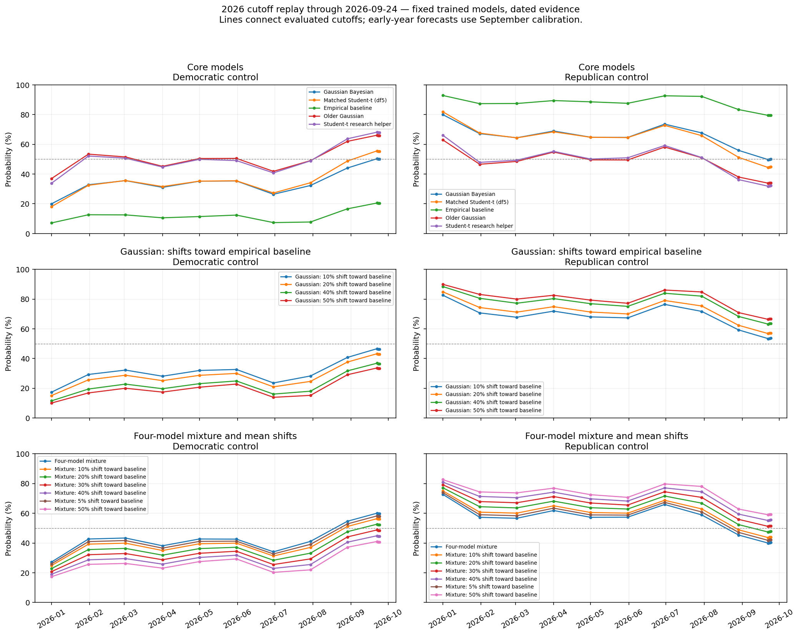
| D_control_pct | R_control_pct | |||||
|---|---|---|---|---|---|---|
| date | 2026-09-22 | 2026-09-23 | 2026-09-24 | 2026-09-22 | 2026-09-23 | 2026-09-24 |
| model | ||||||
| Gaussian Bayesian | 50.31 | 50.04 | 50.00 | 49.69 | 49.96 | 50.00 |
| Gaussian: 10% shift toward baseline | 46.62 | 46.35 | 46.31 | 53.38 | 53.65 | 53.69 |
| Gaussian: 20% shift toward baseline | 43.23 | 42.89 | 42.88 | 56.77 | 57.11 | 57.12 |
| Gaussian: 40% shift toward baseline | 36.85 | 36.50 | 36.49 | 63.15 | 63.50 | 63.51 |
| Gaussian: 50% shift toward baseline | 33.65 | 33.32 | 33.28 | 66.35 | 66.68 | 66.72 |
| Four-model mixture | 60.06 | 59.77 | 59.73 | 39.94 | 40.23 | 40.27 |
| Matched Student-t (df5) | 55.61 | 55.23 | 55.18 | 44.39 | 44.77 | 44.82 |
| Mixture: 10% shift toward baseline | 56.38 | 56.08 | 56.04 | 43.62 | 43.92 | 43.96 |
| Mixture: 20% shift toward baseline | 52.65 | 52.27 | 52.23 | 47.35 | 47.73 | 47.77 |
| Mixture: 30% shift toward baseline | 48.80 | 48.42 | 48.40 | 51.20 | 51.58 | 51.60 |
| Mixture: 40% shift toward baseline | 44.88 | 44.49 | 44.48 | 55.12 | 55.51 | 55.52 |
| Mixture: 5% shift toward baseline | 58.24 | 57.91 | 57.88 | 41.76 | 42.09 | 42.12 |
| Mixture: 50% shift toward baseline | 41.03 | 40.62 | 40.61 | 58.97 | 59.38 | 59.39 |
| Empirical baseline | 20.53 | 20.40 | 20.40 | 79.47 | 79.60 | 79.60 |
| Older Gaussian | 66.14 | 65.91 | 65.90 | 33.86 | 34.09 | 34.10 |
| Student-t research helper | 68.18 | 67.88 | 67.84 | 31.82 | 32.12 | 32.16 |
| scenario | cycle | model | point_D | point_R | expected_D | expected_R | p_D_control | D_lo70 | D_hi70 | fixed_D | unmodeled_contested | actual_D | method | p_R_control | p_tied50 | expected_D_exact | D_median | seat_wis | D_lo50 | D_hi50 | width50 | coverage50 | width70 | coverage70 | D_lo80 | D_hi80 | width80 | coverage80 | D_lo95 | D_hi95 | width95 | coverage95 | seat_crps | expected_seat_error | D_control_pct | R_control_pct | cutoff | delta_D_pp | delta_R_pp | days_since_previous |
|---|---|---|---|---|---|---|---|---|---|---|---|---|---|---|---|---|---|---|---|---|---|---|---|---|---|---|---|---|---|---|---|---|---|---|---|---|---|---|---|---|
| matched_live | 2026 | Gaussian Bayesian | 49 | 51 | 49.01 | 50.99 | 0.20 | 47 | 51 | 34.00 | 0.00 | — | Bayesian joint covariance | 0.80 | — | — | — | — | — | — | — | — | — | — | — | — | — | — | — | — | — | — | — | — | 19.99 | 80.01 | 2026-01-01 | — | — | — |
| matched_live | 2026 | Gaussian Bayesian | 49 | 51 | 49.75 | 50.25 | 0.33 | 48 | 51 | 34.00 | 0.00 | — | Bayesian joint covariance | 0.67 | — | — | — | — | — | — | — | — | — | — | — | — | — | — | — | — | — | — | — | — | 32.80 | 67.20 | 2026-01-31 | 12.81 | -12.81 | 30.00 |
| matched_live | 2026 | Gaussian Bayesian | 50 | 50 | 49.90 | 50.10 | 0.36 | 48 | 52 | 34.00 | 0.00 | — | Bayesian joint covariance | 0.64 | — | — | — | — | — | — | — | — | — | — | — | — | — | — | — | — | — | — | — | — | 35.58 | 64.42 | 2026-03-02 | 2.78 | -2.78 | 30.00 |
| matched_live | 2026 | Gaussian Bayesian | 50 | 50 | 49.69 | 50.31 | 0.31 | 48 | 51 | 34.00 | 0.00 | — | Bayesian joint covariance | 0.69 | — | — | — | — | — | — | — | — | — | — | — | — | — | — | — | — | — | — | — | — | 31.05 | 68.95 | 2026-04-01 | -4.53 | 4.53 | 30.00 |
| matched_live | 2026 | Gaussian Bayesian | 50 | 50 | 49.86 | 50.14 | 0.35 | 48 | 52 | 34.00 | 0.00 | — | Bayesian joint covariance | 0.65 | — | — | — | — | — | — | — | — | — | — | — | — | — | — | — | — | — | — | — | — | 35.21 | 64.79 | 2026-05-01 | 4.16 | -4.16 | 30.00 |
| matched_live | 2026 | Gaussian Bayesian | 50 | 50 | 49.87 | 50.13 | 0.35 | 48 | 52 | 34.00 | 0.00 | — | Bayesian joint covariance | 0.65 | — | — | — | — | — | — | — | — | — | — | — | — | — | — | — | — | — | — | — | — | 35.37 | 64.63 | 2026-05-31 | 0.15 | -0.15 | 30.00 |
| matched_live | 2026 | Gaussian Bayesian | 50 | 50 | 49.55 | 50.45 | 0.26 | 48 | 51 | 34.00 | 0.00 | — | Bayesian joint covariance | 0.74 | — | — | — | — | — | — | — | — | — | — | — | — | — | — | — | — | — | — | — | — | 26.41 | 73.59 | 2026-06-30 | -8.95 | 8.95 | 30.00 |
| matched_live | 2026 | Gaussian Bayesian | 50 | 50 | 49.79 | 50.21 | 0.32 | 48 | 51 | 34.00 | 0.00 | — | Bayesian joint covariance | 0.68 | — | — | — | — | — | — | — | — | — | — | — | — | — | — | — | — | — | — | — | — | 32.30 | 67.70 | 2026-07-30 | 5.89 | -5.89 | 30.00 |
| matched_live | 2026 | Gaussian Bayesian | 50 | 50 | 50.29 | 49.71 | 0.44 | 49 | 52 | 34.00 | 0.00 | — | Bayesian joint covariance | 0.56 | — | — | — | — | — | — | — | — | — | — | — | — | — | — | — | — | — | — | — | — | 44.08 | 55.92 | 2026-08-29 | 11.77 | -11.77 | 30.00 |
| matched_live | 2026 | Gaussian Bayesian | 51 | 49 | 50.50 | 49.50 | 0.50 | 49 | 52 | 34.00 | 0.00 | — | Bayesian joint covariance | 0.50 | — | — | — | — | — | — | — | — | — | — | — | — | — | — | — | — | — | — | — | — | 50.31 | 49.69 | 2026-09-22 | 6.23 | -6.23 | 24.00 |
| matched_live | 2026 | Gaussian Bayesian | 51 | 49 | 50.49 | 49.51 | 0.50 | 49 | 52 | 34.00 | 0.00 | — | Bayesian joint covariance | 0.50 | — | — | — | — | — | — | — | — | — | — | — | — | — | — | — | — | — | — | — | — | 50.04 | 49.96 | 2026-09-23 | -0.26 | 0.26 | 1.00 |
| matched_live | 2026 | Gaussian Bayesian | 51 | 49 | 50.49 | 49.51 | 0.50 | 49 | 52 | 34.00 | 0.00 | — | Bayesian joint covariance | 0.50 | — | — | — | — | — | — | — | — | — | — | — | — | — | — | — | — | — | — | — | — | 50.00 | 50.00 | 2026-09-24 | -0.05 | 0.05 | 1.00 |
| matched_live | 2026 | Gaussian: 10% shift toward baseline | 48 | 52 | 48.83 | 51.17 | 0.17 | 47 | 51 | 34.00 | 0.00 | — | Bayesian joint covariance | 0.83 | — | — | — | — | — | — | — | — | — | — | — | — | — | — | — | — | — | — | — | — | 17.37 | 82.63 | 2026-01-01 | — | — | — |
| matched_live | 2026 | Gaussian: 10% shift toward baseline | 49 | 51 | 49.58 | 50.42 | 0.29 | 48 | 51 | 34.00 | 0.00 | — | Bayesian joint covariance | 0.71 | — | — | — | — | — | — | — | — | — | — | — | — | — | — | — | — | — | — | — | — | 29.29 | 70.71 | 2026-01-31 | 11.92 | -11.92 | 30.00 |
| matched_live | 2026 | Gaussian: 10% shift toward baseline | 50 | 50 | 49.75 | 50.25 | 0.32 | 48 | 51 | 34.00 | 0.00 | — | Bayesian joint covariance | 0.68 | — | — | — | — | — | — | — | — | — | — | — | — | — | — | — | — | — | — | — | — | 32.23 | 67.77 | 2026-03-02 | 2.93 | -2.93 | 30.00 |
| matched_live | 2026 | Gaussian: 10% shift toward baseline | 49 | 51 | 49.53 | 50.47 | 0.28 | 48 | 51 | 34.00 | 0.00 | — | Bayesian joint covariance | 0.72 | — | — | — | — | — | — | — | — | — | — | — | — | — | — | — | — | — | — | — | — | 28.10 | 71.90 | 2026-04-01 | -4.12 | 4.12 | 30.00 |
| matched_live | 2026 | Gaussian: 10% shift toward baseline | 50 | 50 | 49.71 | 50.29 | 0.32 | 48 | 51 | 34.00 | 0.00 | — | Bayesian joint covariance | 0.68 | — | — | — | — | — | — | — | — | — | — | — | — | — | — | — | — | — | — | — | — | 31.97 | 68.03 | 2026-05-01 | 3.87 | -3.87 | 30.00 |
| matched_live | 2026 | Gaussian: 10% shift toward baseline | 50 | 50 | 49.74 | 50.26 | 0.33 | 48 | 51 | 34.00 | 0.00 | — | Bayesian joint covariance | 0.67 | — | — | — | — | — | — | — | — | — | — | — | — | — | — | — | — | — | — | — | — | 32.65 | 67.35 | 2026-05-31 | 0.67 | -0.67 | 30.00 |
| matched_live | 2026 | Gaussian: 10% shift toward baseline | 50 | 50 | 49.40 | 50.60 | 0.24 | 48 | 51 | 34.00 | 0.00 | — | Bayesian joint covariance | 0.76 | — | — | — | — | — | — | — | — | — | — | — | — | — | — | — | — | — | — | — | — | 23.57 | 76.43 | 2026-06-30 | -9.07 | 9.07 | 30.00 |
| matched_live | 2026 | Gaussian: 10% shift toward baseline | 50 | 50 | 49.61 | 50.39 | 0.28 | 48 | 51 | 34.00 | 0.00 | — | Bayesian joint covariance | 0.72 | — | — | — | — | — | — | — | — | — | — | — | — | — | — | — | — | — | — | — | — | 28.27 | 71.73 | 2026-07-30 | 4.70 | -4.70 | 30.00 |
| matched_live | 2026 | Gaussian: 10% shift toward baseline | 50 | 50 | 50.16 | 49.84 | 0.41 | 49 | 52 | 34.00 | 0.00 | — | Bayesian joint covariance | 0.59 | — | — | — | — | — | — | — | — | — | — | — | — | — | — | — | — | — | — | — | — | 40.76 | 59.24 | 2026-08-29 | 12.49 | -12.49 | 30.00 |
| matched_live | 2026 | Gaussian: 10% shift toward baseline | 51 | 49 | 50.37 | 49.63 | 0.47 | 49 | 52 | 34.00 | 0.00 | — | Bayesian joint covariance | 0.53 | — | — | — | — | — | — | — | — | — | — | — | — | — | — | — | — | — | — | — | — | 46.62 | 53.38 | 2026-09-22 | 5.87 | -5.87 | 24.00 |
| matched_live | 2026 | Gaussian: 10% shift toward baseline | 51 | 49 | 50.36 | 49.64 | 0.46 | 49 | 52 | 34.00 | 0.00 | — | Bayesian joint covariance | 0.54 | — | — | — | — | — | — | — | — | — | — | — | — | — | — | — | — | — | — | — | — | 46.35 | 53.65 | 2026-09-23 | -0.27 | 0.27 | 1.00 |
| matched_live | 2026 | Gaussian: 10% shift toward baseline | 51 | 49 | 50.36 | 49.64 | 0.46 | 49 | 52 | 34.00 | 0.00 | — | Bayesian joint covariance | 0.54 | — | — | — | — | — | — | — | — | — | — | — | — | — | — | — | — | — | — | — | — | 46.31 | 53.69 | 2026-09-24 | -0.04 | 0.04 | 1.00 |
| matched_live | 2026 | Gaussian: 20% shift toward baseline | 48 | 52 | 48.65 | 51.35 | 0.15 | 47 | 51 | 34.00 | 0.00 | — | Bayesian joint covariance | 0.85 | — | — | — | — | — | — | — | — | — | — | — | — | — | — | — | — | — | — | — | — | 15.08 | 84.92 | 2026-01-01 | — | — | — |
| matched_live | 2026 | Gaussian: 20% shift toward baseline | 48 | 52 | 49.39 | 50.61 | 0.26 | 48 | 51 | 34.00 | 0.00 | — | Bayesian joint covariance | 0.74 | — | — | — | — | — | — | — | — | — | — | — | — | — | — | — | — | — | — | — | — | 25.67 | 74.33 | 2026-01-31 | 10.59 | -10.59 | 30.00 |
| matched_live | 2026 | Gaussian: 20% shift toward baseline | 50 | 50 | 49.59 | 50.41 | 0.29 | 48 | 51 | 34.00 | 0.00 | — | Bayesian joint covariance | 0.71 | — | — | — | — | — | — | — | — | — | — | — | — | — | — | — | — | — | — | — | — | 28.77 | 71.23 | 2026-03-02 | 3.10 | -3.10 | 30.00 |
| matched_live | 2026 | Gaussian: 20% shift toward baseline | 49 | 51 | 49.37 | 50.63 | 0.25 | 48 | 51 | 34.00 | 0.00 | — | Bayesian joint covariance | 0.75 | — | — | — | — | — | — | — | — | — | — | — | — | — | — | — | — | — | — | — | — | 25.12 | 74.88 | 2026-04-01 | -3.65 | 3.65 | 30.00 |
| matched_live | 2026 | Gaussian: 20% shift toward baseline | 49 | 51 | 49.55 | 50.45 | 0.29 | 48 | 51 | 34.00 | 0.00 | — | Bayesian joint covariance | 0.71 | — | — | — | — | — | — | — | — | — | — | — | — | — | — | — | — | — | — | — | — | 28.71 | 71.29 | 2026-05-01 | 3.59 | -3.59 | 30.00 |
| matched_live | 2026 | Gaussian: 20% shift toward baseline | 50 | 50 | 49.61 | 50.39 | 0.30 | 48 | 51 | 34.00 | 0.00 | — | Bayesian joint covariance | 0.70 | — | — | — | — | — | — | — | — | — | — | — | — | — | — | — | — | — | — | — | — | 29.99 | 70.01 | 2026-05-31 | 1.28 | -1.28 | 30.00 |
| matched_live | 2026 | Gaussian: 20% shift toward baseline | 49 | 51 | 49.24 | 50.76 | 0.21 | 48 | 51 | 34.00 | 0.00 | — | Bayesian joint covariance | 0.79 | — | — | — | — | — | — | — | — | — | — | — | — | — | — | — | — | — | — | — | — | 20.96 | 79.04 | 2026-06-30 | -9.02 | 9.02 | 30.00 |
| matched_live | 2026 | Gaussian: 20% shift toward baseline | 49 | 51 | 49.42 | 50.58 | 0.25 | 48 | 51 | 34.00 | 0.00 | — | Bayesian joint covariance | 0.75 | — | — | — | — | — | — | — | — | — | — | — | — | — | — | — | — | — | — | — | — | 24.63 | 75.37 | 2026-07-30 | 3.67 | -3.67 | 30.00 |
| matched_live | 2026 | Gaussian: 20% shift toward baseline | 50 | 50 | 50.02 | 49.98 | 0.38 | 48 | 52 | 34.00 | 0.00 | — | Bayesian joint covariance | 0.62 | — | — | — | — | — | — | — | — | — | — | — | — | — | — | — | — | — | — | — | — | 37.65 | 62.35 | 2026-08-29 | 13.02 | -13.02 | 30.00 |
| matched_live | 2026 | Gaussian: 20% shift toward baseline | 51 | 49 | 50.23 | 49.77 | 0.43 | 49 | 52 | 34.00 | 0.00 | — | Bayesian joint covariance | 0.57 | — | — | — | — | — | — | — | — | — | — | — | — | — | — | — | — | — | — | — | — | 43.23 | 56.77 | 2026-09-22 | 5.59 | -5.59 | 24.00 |
| matched_live | 2026 | Gaussian: 20% shift toward baseline | 51 | 49 | 50.22 | 49.78 | 0.43 | 49 | 52 | 34.00 | 0.00 | — | Bayesian joint covariance | 0.57 | — | — | — | — | — | — | — | — | — | — | — | — | — | — | — | — | — | — | — | — | 42.89 | 57.11 | 2026-09-23 | -0.35 | 0.35 | 1.00 |
| matched_live | 2026 | Gaussian: 20% shift toward baseline | 51 | 49 | 50.22 | 49.78 | 0.43 | 49 | 52 | 34.00 | 0.00 | — | Bayesian joint covariance | 0.57 | — | — | — | — | — | — | — | — | — | — | — | — | — | — | — | — | — | — | — | — | 42.88 | 57.12 | 2026-09-24 | -0.01 | 0.01 | 1.00 |
| matched_live | 2026 | Gaussian: 40% shift toward baseline | 47 | 53 | 48.31 | 51.69 | 0.12 | 46 | 50 | 34.00 | 0.00 | — | Bayesian joint covariance | 0.88 | — | — | — | — | — | — | — | — | — | — | — | — | — | — | — | — | — | — | — | — | 11.54 | 88.46 | 2026-01-01 | — | — | — |
| matched_live | 2026 | Gaussian: 40% shift toward baseline | 48 | 52 | 49.00 | 51.00 | 0.19 | 47 | 51 | 34.00 | 0.00 | — | Bayesian joint covariance | 0.81 | — | — | — | — | — | — | — | — | — | — | — | — | — | — | — | — | — | — | — | — | 19.48 | 80.52 | 2026-01-31 | 7.95 | -7.95 | 30.00 |
| matched_live | 2026 | Gaussian: 40% shift toward baseline | 48 | 52 | 49.25 | 50.75 | 0.23 | 47 | 51 | 34.00 | 0.00 | — | Bayesian joint covariance | 0.77 | — | — | — | — | — | — | — | — | — | — | — | — | — | — | — | — | — | — | — | — | 22.79 | 77.21 | 2026-03-02 | 3.31 | -3.31 | 30.00 |
| matched_live | 2026 | Gaussian: 40% shift toward baseline | 48 | 52 | 49.04 | 50.96 | 0.20 | 47 | 51 | 34.00 | 0.00 | — | Bayesian joint covariance | 0.80 | — | — | — | — | — | — | — | — | — | — | — | — | — | — | — | — | — | — | — | — | 19.70 | 80.30 | 2026-04-01 | -3.09 | 3.09 | 30.00 |
| matched_live | 2026 | Gaussian: 40% shift toward baseline | 49 | 51 | 49.24 | 50.76 | 0.23 | 47 | 51 | 34.00 | 0.00 | — | Bayesian joint covariance | 0.77 | — | — | — | — | — | — | — | — | — | — | — | — | — | — | — | — | — | — | — | — | 23.10 | 76.90 | 2026-05-01 | 3.40 | -3.40 | 30.00 |
| matched_live | 2026 | Gaussian: 40% shift toward baseline | 49 | 51 | 49.34 | 50.66 | 0.25 | 48 | 51 | 34.00 | 0.00 | — | Bayesian joint covariance | 0.75 | — | — | — | — | — | — | — | — | — | — | — | — | — | — | — | — | — | — | — | — | 24.91 | 75.09 | 2026-05-31 | 1.81 | -1.81 | 30.00 |
| matched_live | 2026 | Gaussian: 40% shift toward baseline | 49 | 51 | 48.92 | 51.08 | 0.16 | 47 | 51 | 34.00 | 0.00 | — | Bayesian joint covariance | 0.84 | — | — | — | — | — | — | — | — | — | — | — | — | — | — | — | — | — | — | — | — | 16.09 | 83.91 | 2026-06-30 | -8.82 | 8.82 | 30.00 |
| matched_live | 2026 | Gaussian: 40% shift toward baseline | 49 | 51 | 49.01 | 50.99 | 0.18 | 47 | 51 | 34.00 | 0.00 | — | Bayesian joint covariance | 0.82 | — | — | — | — | — | — | — | — | — | — | — | — | — | — | — | — | — | — | — | — | 18.02 | 81.98 | 2026-07-30 | 1.93 | -1.93 | 30.00 |
| matched_live | 2026 | Gaussian: 40% shift toward baseline | 50 | 50 | 49.73 | 50.27 | 0.32 | 48 | 51 | 34.00 | 0.00 | — | Bayesian joint covariance | 0.68 | — | — | — | — | — | — | — | — | — | — | — | — | — | — | — | — | — | — | — | — | 31.70 | 68.30 | 2026-08-29 | 13.68 | -13.68 | 30.00 |
| matched_live | 2026 | Gaussian: 40% shift toward baseline | 51 | 49 | 49.93 | 50.07 | 0.37 | 48 | 52 | 34.00 | 0.00 | — | Bayesian joint covariance | 0.63 | — | — | — | — | — | — | — | — | — | — | — | — | — | — | — | — | — | — | — | — | 36.85 | 63.15 | 2026-09-22 | 5.15 | -5.15 | 24.00 |
| matched_live | 2026 | Gaussian: 40% shift toward baseline | 51 | 49 | 49.91 | 50.09 | 0.36 | 48 | 52 | 34.00 | 0.00 | — | Bayesian joint covariance | 0.64 | — | — | — | — | — | — | — | — | — | — | — | — | — | — | — | — | — | — | — | — | 36.50 | 63.50 | 2026-09-23 | -0.36 | 0.36 | 1.00 |
| matched_live | 2026 | Gaussian: 40% shift toward baseline | 51 | 49 | 49.91 | 50.09 | 0.36 | 48 | 52 | 34.00 | 0.00 | — | Bayesian joint covariance | 0.64 | — | — | — | — | — | — | — | — | — | — | — | — | — | — | — | — | — | — | — | — | 36.49 | 63.51 | 2026-09-24 | -0.01 | 0.01 | 1.00 |
| matched_live | 2026 | Gaussian: 50% shift toward baseline | 47 | 53 | 48.16 | 51.84 | 0.10 | 46 | 50 | 34.00 | 0.00 | — | Bayesian joint covariance | 0.90 | — | — | — | — | — | — | — | — | — | — | — | — | — | — | — | — | — | — | — | — | 10.06 | 89.94 | 2026-01-01 | — | — | — |
| matched_live | 2026 | Gaussian: 50% shift toward baseline | 47 | 53 | 48.80 | 51.20 | 0.17 | 47 | 51 | 34.00 | 0.00 | — | Bayesian joint covariance | 0.83 | — | — | — | — | — | — | — | — | — | — | — | — | — | — | — | — | — | — | — | — | 16.86 | 83.14 | 2026-01-31 | 6.80 | -6.80 | 30.00 |
| matched_live | 2026 | Gaussian: 50% shift toward baseline | 48 | 52 | 49.07 | 50.93 | 0.20 | 47 | 51 | 34.00 | 0.00 | — | Bayesian joint covariance | 0.80 | — | — | — | — | — | — | — | — | — | — | — | — | — | — | — | — | — | — | — | — | 20.01 | 79.99 | 2026-03-02 | 3.15 | -3.15 | 30.00 |
| matched_live | 2026 | Gaussian: 50% shift toward baseline | 48 | 52 | 48.87 | 51.13 | 0.17 | 47 | 51 | 34.00 | 0.00 | — | Bayesian joint covariance | 0.83 | — | — | — | — | — | — | — | — | — | — | — | — | — | — | — | — | — | — | — | — | 17.42 | 82.58 | 2026-04-01 | -2.59 | 2.59 | 30.00 |
| matched_live | 2026 | Gaussian: 50% shift toward baseline | 49 | 51 | 49.10 | 50.90 | 0.21 | 47 | 51 | 34.00 | 0.00 | — | Bayesian joint covariance | 0.79 | — | — | — | — | — | — | — | — | — | — | — | — | — | — | — | — | — | — | — | — | 20.71 | 79.29 | 2026-05-01 | 3.28 | -3.28 | 30.00 |
| matched_live | 2026 | Gaussian: 50% shift toward baseline | 49 | 51 | 49.20 | 50.80 | 0.23 | 47 | 51 | 34.00 | 0.00 | — | Bayesian joint covariance | 0.77 | — | — | — | — | — | — | — | — | — | — | — | — | — | — | — | — | — | — | — | — | 22.83 | 77.17 | 2026-05-31 | 2.12 | -2.12 | 30.00 |
| matched_live | 2026 | Gaussian: 50% shift toward baseline | 49 | 51 | 48.75 | 51.25 | 0.14 | 47 | 50 | 34.00 | 0.00 | — | Bayesian joint covariance | 0.86 | — | — | — | — | — | — | — | — | — | — | — | — | — | — | — | — | — | — | — | — | 13.91 | 86.09 | 2026-06-30 | -8.92 | 8.92 | 30.00 |
| matched_live | 2026 | Gaussian: 50% shift toward baseline | 48 | 52 | 48.80 | 51.20 | 0.15 | 47 | 51 | 34.00 | 0.00 | — | Bayesian joint covariance | 0.85 | — | — | — | — | — | — | — | — | — | — | — | — | — | — | — | — | — | — | — | — | 15.20 | 84.80 | 2026-07-30 | 1.29 | -1.29 | 30.00 |
| matched_live | 2026 | Gaussian: 50% shift toward baseline | 49 | 51 | 49.58 | 50.42 | 0.29 | 48 | 51 | 34.00 | 0.00 | — | Bayesian joint covariance | 0.71 | — | — | — | — | — | — | — | — | — | — | — | — | — | — | — | — | — | — | — | — | 29.11 | 70.89 | 2026-08-29 | 13.90 | -13.90 | 30.00 |
| matched_live | 2026 | Gaussian: 50% shift toward baseline | 51 | 49 | 49.76 | 50.24 | 0.34 | 48 | 52 | 34.00 | 0.00 | — | Bayesian joint covariance | 0.66 | — | — | — | — | — | — | — | — | — | — | — | — | — | — | — | — | — | — | — | — | 33.65 | 66.35 | 2026-09-22 | 4.55 | -4.55 | 24.00 |
| matched_live | 2026 | Gaussian: 50% shift toward baseline | 51 | 49 | 49.75 | 50.25 | 0.33 | 48 | 52 | 34.00 | 0.00 | — | Bayesian joint covariance | 0.67 | — | — | — | — | — | — | — | — | — | — | — | — | — | — | — | — | — | — | — | — | 33.32 | 66.68 | 2026-09-23 | -0.34 | 0.34 | 1.00 |
| matched_live | 2026 | Gaussian: 50% shift toward baseline | 51 | 49 | 49.74 | 50.26 | 0.33 | 48 | 52 | 34.00 | 0.00 | — | Bayesian joint covariance | 0.67 | — | — | — | — | — | — | — | — | — | — | — | — | — | — | — | — | — | — | — | — | 33.28 | 66.72 | 2026-09-24 | -0.04 | 0.04 | 1.00 |
| matched_live | 2026 | Four-model mixture | 48 | 52 | 49.32 | 50.68 | 0.27 | 47 | 51 | 34.00 | 0.00 | — | Whole-vector predictive mixture; weighted joint draws | 0.73 | — | 49.32 | 49.00 | — | 48.00 | 51.00 | 3.00 | — | 4.00 | — | 47.00 | 52.00 | 5.00 | — | 45.00 | 54.00 | 9.00 | — | — | — | 27.21 | 72.79 | 2026-01-01 | — | — | — |
| matched_live | 2026 | Four-model mixture | 49 | 51 | 50.21 | 49.79 | 0.43 | 48 | 52 | 34.00 | 0.00 | — | Whole-vector predictive mixture; weighted joint draws | 0.57 | — | 50.21 | 50.00 | — | 49.00 | 51.00 | 2.00 | — | 4.00 | — | 48.00 | 53.00 | 5.00 | — | 46.00 | 54.00 | 8.00 | — | — | — | 42.70 | 57.30 | 2026-01-31 | 15.48 | -15.48 | 30.00 |
| matched_live | 2026 | Four-model mixture | 50 | 50 | 50.23 | 49.77 | 0.43 | 48 | 52 | 34.00 | 0.00 | — | Whole-vector predictive mixture; weighted joint draws | 0.57 | — | 50.23 | 50.00 | — | 49.00 | 51.00 | 2.00 | — | 4.00 | — | 48.00 | 53.00 | 5.00 | — | 47.00 | 54.00 | 7.00 | — | — | — | 43.36 | 56.64 | 2026-03-02 | 0.66 | -0.66 | 30.00 |
| matched_live | 2026 | Four-model mixture | 50 | 50 | 49.97 | 50.03 | 0.38 | 48 | 52 | 34.00 | 0.00 | — | Whole-vector predictive mixture; weighted joint draws | 0.62 | — | 49.97 | 50.00 | — | 49.00 | 51.00 | 2.00 | — | 4.00 | — | 48.00 | 52.00 | 4.00 | — | 46.00 | 54.00 | 8.00 | — | — | — | 38.14 | 61.86 | 2026-04-01 | -5.22 | 5.22 | 30.00 |
| matched_live | 2026 | Four-model mixture | 50 | 50 | 50.20 | 49.80 | 0.43 | 48 | 52 | 34.00 | 0.00 | — | Whole-vector predictive mixture; weighted joint draws | 0.57 | — | 50.20 | 50.00 | — | 49.00 | 51.00 | 2.00 | — | 4.00 | — | 48.00 | 53.00 | 5.00 | — | 47.00 | 54.00 | 7.00 | — | — | — | 42.70 | 57.30 | 2026-05-01 | 4.57 | -4.57 | 30.00 |
| matched_live | 2026 | Four-model mixture | 50 | 50 | 50.19 | 49.81 | 0.43 | 48 | 52 | 34.00 | 0.00 | — | Whole-vector predictive mixture; weighted joint draws | 0.57 | — | 50.19 | 50.00 | — | 49.00 | 51.00 | 2.00 | — | 4.00 | — | 48.00 | 53.00 | 5.00 | — | 47.00 | 54.00 | 7.00 | — | — | — | 42.61 | 57.39 | 2026-05-31 | -0.10 | 0.10 | 30.00 |
| matched_live | 2026 | Four-model mixture | 50 | 50 | 49.84 | 50.16 | 0.34 | 48 | 52 | 34.00 | 0.00 | — | Whole-vector predictive mixture; weighted joint draws | 0.66 | — | 49.84 | 50.00 | — | 49.00 | 51.00 | 2.00 | — | 4.00 | — | 48.00 | 52.00 | 4.00 | — | 46.00 | 53.00 | 7.00 | — | — | — | 34.07 | 65.93 | 2026-06-30 | -8.54 | 8.54 | 30.00 |
| matched_live | 2026 | Four-model mixture | 50 | 50 | 50.15 | 49.85 | 0.41 | 48 | 52 | 34.00 | 0.00 | — | Whole-vector predictive mixture; weighted joint draws | 0.59 | — | 50.15 | 50.00 | — | 49.00 | 51.00 | 2.00 | — | 4.00 | — | 48.00 | 52.00 | 4.00 | — | 47.00 | 54.00 | 7.00 | — | — | — | 41.09 | 58.91 | 2026-07-30 | 7.02 | -7.02 | 30.00 |
| matched_live | 2026 | Four-model mixture | 50 | 50 | 50.73 | 49.27 | 0.55 | 49 | 52 | 34.00 | 0.00 | — | Whole-vector predictive mixture; weighted joint draws | 0.45 | — | 50.73 | 51.00 | — | 50.00 | 52.00 | 2.00 | — | 3.00 | — | 49.00 | 53.00 | 4.00 | — | 47.00 | 54.00 | 7.00 | — | — | — | 54.65 | 45.35 | 2026-08-29 | 13.56 | -13.56 | 30.00 |
| matched_live | 2026 | Four-model mixture | 51 | 49 | 50.96 | 49.04 | 0.60 | 49 | 53 | 34.00 | 0.00 | — | Whole-vector predictive mixture; weighted joint draws | 0.40 | — | 50.96 | 51.00 | — | 50.00 | 52.00 | 2.00 | — | 4.00 | — | 49.00 | 53.00 | 4.00 | — | 48.00 | 55.00 | 7.00 | — | — | — | 60.06 | 39.94 | 2026-09-22 | 5.42 | -5.42 | 24.00 |
| matched_live | 2026 | Four-model mixture | 51 | 49 | 50.95 | 49.05 | 0.60 | 49 | 53 | 34.00 | 0.00 | — | Whole-vector predictive mixture; weighted joint draws | 0.40 | — | 50.95 | 51.00 | — | 50.00 | 52.00 | 2.00 | — | 4.00 | — | 49.00 | 53.00 | 4.00 | — | 48.00 | 55.00 | 7.00 | — | — | — | 59.77 | 40.23 | 2026-09-23 | -0.30 | 0.30 | 1.00 |
| matched_live | 2026 | Four-model mixture | 51 | 49 | 50.95 | 49.05 | 0.60 | 49 | 53 | 34.00 | 0.00 | — | Whole-vector predictive mixture; weighted joint draws | 0.40 | — | 50.95 | 51.00 | — | 50.00 | 52.00 | 2.00 | — | 4.00 | — | 49.00 | 53.00 | 4.00 | — | 48.00 | 55.00 | 7.00 | — | — | — | 59.73 | 40.27 | 2026-09-24 | -0.04 | 0.04 | 1.00 |
| matched_live | 2026 | Matched Student-t (df5) | 49 | 51 | 48.94 | 51.06 | 0.18 | 47 | 51 | 34.00 | 0.00 | — | Joint Student MCMC | 0.82 | — | 48.94 | 49.00 | — | 48.00 | 50.00 | 2.00 | — | 4.00 | — | 47.00 | 51.00 | 4.00 | — | 46.00 | 52.00 | 6.00 | — | — | — | 18.06 | 81.94 | 2026-01-01 | — | — | — |
| matched_live | 2026 | Matched Student-t (df5) | 49 | 51 | 49.77 | 50.23 | 0.32 | 48 | 51 | 34.00 | 0.00 | — | Joint Student MCMC | 0.68 | — | 49.77 | 50.00 | — | 49.00 | 51.00 | 2.00 | — | 3.00 | — | 48.00 | 52.00 | 4.00 | — | 47.00 | 53.00 | 6.00 | — | — | — | 32.44 | 67.56 | 2026-01-31 | 14.38 | -14.38 | 30.00 |
| matched_live | 2026 | Matched Student-t (df5) | 50 | 50 | 49.95 | 50.05 | 0.36 | 48 | 51 | 34.00 | 0.00 | — | Joint Student MCMC | 0.64 | — | 49.95 | 50.00 | — | 49.00 | 51.00 | 2.00 | — | 3.00 | — | 48.00 | 52.00 | 4.00 | — | 47.00 | 53.00 | 6.00 | — | — | — | 35.66 | 64.34 | 2026-03-02 | 3.21 | -3.21 | 30.00 |
| matched_live | 2026 | Matched Student-t (df5) | 50 | 50 | 49.76 | 50.24 | 0.32 | 48 | 51 | 34.00 | 0.00 | — | Joint Student MCMC | 0.68 | — | 49.76 | 50.00 | — | 49.00 | 51.00 | 2.00 | — | 3.00 | — | 48.00 | 52.00 | 4.00 | — | 47.00 | 53.00 | 6.00 | — | — | — | 31.58 | 68.42 | 2026-04-01 | -4.07 | 4.07 | 30.00 |
| matched_live | 2026 | Matched Student-t (df5) | 50 | 50 | 49.91 | 50.09 | 0.35 | 48 | 52 | 34.00 | 0.00 | — | Joint Student MCMC | 0.65 | — | 49.91 | 50.00 | — | 49.00 | 51.00 | 2.00 | — | 4.00 | — | 48.00 | 52.00 | 4.00 | — | 47.00 | 53.00 | 6.00 | — | — | — | 35.26 | 64.74 | 2026-05-01 | 3.67 | -3.67 | 30.00 |
| matched_live | 2026 | Matched Student-t (df5) | 50 | 50 | 49.92 | 50.08 | 0.35 | 48 | 52 | 34.00 | 0.00 | — | Joint Student MCMC | 0.65 | — | 49.92 | 50.00 | — | 49.00 | 51.00 | 2.00 | — | 4.00 | — | 48.00 | 52.00 | 4.00 | — | 47.00 | 53.00 | 6.00 | — | — | — | 35.47 | 64.53 | 2026-05-31 | 0.21 | -0.21 | 30.00 |
| matched_live | 2026 | Matched Student-t (df5) | 50 | 50 | 49.64 | 50.36 | 0.27 | 48 | 51 | 34.00 | 0.00 | — | Joint Student MCMC | 0.73 | — | 49.64 | 50.00 | — | 49.00 | 51.00 | 2.00 | — | 3.00 | — | 48.00 | 51.00 | 3.00 | — | 47.00 | 52.00 | 5.00 | — | — | — | 27.26 | 72.74 | 2026-06-30 | -8.21 | 8.21 | 30.00 |
| matched_live | 2026 | Matched Student-t (df5) | 50 | 50 | 49.90 | 50.10 | 0.34 | 48 | 51 | 34.00 | 0.00 | — | Joint Student MCMC | 0.66 | — | 49.90 | 50.00 | — | 49.00 | 51.00 | 2.00 | — | 3.00 | — | 48.00 | 52.00 | 4.00 | — | 47.00 | 53.00 | 6.00 | — | — | — | 34.16 | 65.84 | 2026-07-30 | 6.90 | -6.90 | 30.00 |
| matched_live | 2026 | Matched Student-t (df5) | 50 | 50 | 50.44 | 49.56 | 0.49 | 49 | 52 | 34.00 | 0.00 | — | Joint Student MCMC | 0.51 | — | 50.44 | 50.00 | — | 50.00 | 51.00 | 1.00 | — | 3.00 | — | 49.00 | 52.00 | 3.00 | — | 48.00 | 53.00 | 5.00 | — | — | — | 48.76 | 51.24 | 2026-08-29 | 14.61 | -14.61 | 30.00 |
| matched_live | 2026 | Matched Student-t (df5) | 51 | 49 | 50.67 | 49.33 | 0.56 | 49 | 52 | 34.00 | 0.00 | — | Joint Student MCMC | 0.44 | — | 50.67 | 51.00 | — | 50.00 | 52.00 | 2.00 | — | 3.00 | — | 49.00 | 52.00 | 3.00 | — | 48.00 | 53.00 | 5.00 | — | — | — | 55.61 | 44.39 | 2026-09-22 | 6.85 | -6.85 | 24.00 |
| matched_live | 2026 | Matched Student-t (df5) | 51 | 49 | 50.66 | 49.34 | 0.55 | 49 | 52 | 34.00 | 0.00 | — | Joint Student MCMC | 0.45 | — | 50.66 | 51.00 | — | 50.00 | 52.00 | 2.00 | — | 3.00 | — | 49.00 | 52.00 | 3.00 | — | 48.00 | 53.00 | 5.00 | — | — | — | 55.23 | 44.77 | 2026-09-23 | -0.38 | 0.38 | 1.00 |
| matched_live | 2026 | Matched Student-t (df5) | 51 | 49 | 50.65 | 49.35 | 0.55 | 49 | 52 | 34.00 | 0.00 | — | Joint Student MCMC | 0.45 | — | 50.65 | 51.00 | — | 50.00 | 52.00 | 2.00 | — | 3.00 | — | 49.00 | 52.00 | 3.00 | — | 48.00 | 53.00 | 5.00 | — | — | — | 55.17 | 44.83 | 2026-09-24 | -0.06 | 0.06 | 1.00 |
| matched_live | 2026 | Mixture: 10% shift toward baseline | 48 | 52 | 49.17 | 50.83 | 0.25 | 47 | 51 | 34.00 | 0.00 | — | Whole-vector predictive mixture; weighted joint draws | 0.75 | — | 49.17 | 49.00 | — | 48.00 | 50.00 | 2.00 | — | 4.00 | — | 47.00 | 52.00 | 5.00 | — | 45.00 | 53.00 | 8.00 | — | — | — | 24.86 | 75.14 | 2026-01-01 | — | — | — |
| matched_live | 2026 | Mixture: 10% shift toward baseline | 49 | 51 | 50.03 | 49.97 | 0.39 | 48 | 52 | 34.00 | 0.00 | — | Whole-vector predictive mixture; weighted joint draws | 0.61 | — | 50.03 | 50.00 | — | 49.00 | 51.00 | 2.00 | — | 4.00 | — | 48.00 | 53.00 | 5.00 | — | 46.00 | 54.00 | 8.00 | — | — | — | 39.24 | 60.76 | 2026-01-31 | 14.38 | -14.38 | 30.00 |
| matched_live | 2026 | Mixture: 10% shift toward baseline | 50 | 50 | 50.07 | 49.93 | 0.40 | 48 | 52 | 34.00 | 0.00 | — | Whole-vector predictive mixture; weighted joint draws | 0.60 | — | 50.07 | 50.00 | — | 49.00 | 51.00 | 2.00 | — | 4.00 | — | 48.00 | 52.00 | 4.00 | — | 46.00 | 54.00 | 8.00 | — | — | — | 39.90 | 60.10 | 2026-03-02 | 0.66 | -0.66 | 30.00 |
| matched_live | 2026 | Mixture: 10% shift toward baseline | 49 | 51 | 49.81 | 50.19 | 0.35 | 48 | 52 | 34.00 | 0.00 | — | Whole-vector predictive mixture; weighted joint draws | 0.65 | — | 49.81 | 50.00 | — | 49.00 | 51.00 | 2.00 | — | 4.00 | — | 47.00 | 52.00 | 5.00 | — | 46.00 | 54.00 | 8.00 | — | — | — | 34.96 | 65.04 | 2026-04-01 | -4.94 | 4.94 | 30.00 |
| matched_live | 2026 | Mixture: 10% shift toward baseline | 50 | 50 | 50.04 | 49.96 | 0.39 | 48 | 52 | 34.00 | 0.00 | — | Whole-vector predictive mixture; weighted joint draws | 0.61 | — | 50.04 | 50.00 | — | 49.00 | 51.00 | 2.00 | — | 4.00 | — | 48.00 | 52.00 | 4.00 | — | 46.00 | 54.00 | 8.00 | — | — | — | 39.49 | 60.51 | 2026-05-01 | 4.53 | -4.53 | 30.00 |
| matched_live | 2026 | Mixture: 10% shift toward baseline | 50 | 50 | 50.06 | 49.94 | 0.40 | 48 | 52 | 34.00 | 0.00 | — | Whole-vector predictive mixture; weighted joint draws | 0.60 | — | 50.06 | 50.00 | — | 49.00 | 51.00 | 2.00 | — | 4.00 | — | 48.00 | 52.00 | 4.00 | — | 46.00 | 54.00 | 8.00 | — | — | — | 39.91 | 60.09 | 2026-05-31 | 0.42 | -0.42 | 30.00 |
| matched_live | 2026 | Mixture: 10% shift toward baseline | 49 | 51 | 49.69 | 50.31 | 0.31 | 48 | 51 | 34.00 | 0.00 | — | Whole-vector predictive mixture; weighted joint draws | 0.69 | — | 49.69 | 50.00 | — | 49.00 | 51.00 | 2.00 | — | 3.00 | — | 47.00 | 52.00 | 5.00 | — | 46.00 | 53.00 | 7.00 | — | — | — | 31.27 | 68.73 | 2026-06-30 | -8.64 | 8.64 | 30.00 |
| matched_live | 2026 | Mixture: 10% shift toward baseline | 50 | 50 | 49.96 | 50.04 | 0.37 | 48 | 52 | 34.00 | 0.00 | — | Whole-vector predictive mixture; weighted joint draws | 0.63 | — | 49.96 | 50.00 | — | 49.00 | 51.00 | 2.00 | — | 4.00 | — | 48.00 | 52.00 | 4.00 | — | 47.00 | 54.00 | 7.00 | — | — | — | 37.05 | 62.95 | 2026-07-30 | 5.77 | -5.77 | 30.00 |
| matched_live | 2026 | Mixture: 10% shift toward baseline | 50 | 50 | 50.59 | 49.41 | 0.51 | 49 | 52 | 34.00 | 0.00 | — | Whole-vector predictive mixture; weighted joint draws | 0.49 | — | 50.59 | 51.00 | — | 49.00 | 52.00 | 3.00 | — | 3.00 | — | 48.00 | 53.00 | 5.00 | — | 47.00 | 54.00 | 7.00 | — | — | — | 51.14 | 48.86 | 2026-08-29 | 14.10 | -14.10 | 30.00 |
| matched_live | 2026 | Mixture: 10% shift toward baseline | 51 | 49 | 50.81 | 49.19 | 0.56 | 49 | 53 | 34.00 | 0.00 | — | Whole-vector predictive mixture; weighted joint draws | 0.44 | — | 50.81 | 51.00 | — | 50.00 | 52.00 | 2.00 | — | 4.00 | — | 49.00 | 53.00 | 4.00 | — | 47.00 | 54.00 | 7.00 | — | — | — | 56.38 | 43.62 | 2026-09-22 | 5.24 | -5.24 | 24.00 |
| matched_live | 2026 | Mixture: 10% shift toward baseline | 51 | 49 | 50.79 | 49.21 | 0.56 | 49 | 53 | 34.00 | 0.00 | — | Whole-vector predictive mixture; weighted joint draws | 0.44 | — | 50.79 | 51.00 | — | 50.00 | 52.00 | 2.00 | — | 4.00 | — | 49.00 | 53.00 | 4.00 | — | 47.00 | 54.00 | 7.00 | — | — | — | 56.08 | 43.92 | 2026-09-23 | -0.31 | 0.31 | 1.00 |
| matched_live | 2026 | Mixture: 10% shift toward baseline | 51 | 49 | 50.79 | 49.21 | 0.56 | 49 | 53 | 34.00 | 0.00 | — | Whole-vector predictive mixture; weighted joint draws | 0.44 | — | 50.79 | 51.00 | — | 50.00 | 52.00 | 2.00 | — | 4.00 | — | 49.00 | 53.00 | 4.00 | — | 47.00 | 54.00 | 7.00 | — | — | — | 56.04 | 43.96 | 2026-09-24 | -0.03 | 0.03 | 1.00 |
| matched_live | 2026 | Mixture: 20% shift toward baseline | 48 | 52 | 49.01 | 50.99 | 0.23 | 47 | 51 | 34.00 | 0.00 | — | Whole-vector predictive mixture; weighted joint draws | 0.77 | — | 49.01 | 49.00 | — | 48.00 | 50.00 | 2.00 | — | 4.00 | — | 46.00 | 52.00 | 6.00 | — | 45.00 | 53.00 | 8.00 | — | — | — | 22.79 | 77.21 | 2026-01-01 | — | — | — |
| matched_live | 2026 | Mixture: 20% shift toward baseline | 48 | 52 | 49.85 | 50.15 | 0.36 | 48 | 52 | 34.00 | 0.00 | — | Whole-vector predictive mixture; weighted joint draws | 0.64 | — | 49.85 | 50.00 | — | 48.00 | 51.00 | 3.00 | — | 4.00 | — | 47.00 | 52.00 | 5.00 | — | 46.00 | 54.00 | 8.00 | — | — | — | 35.57 | 64.43 | 2026-01-31 | 12.78 | -12.78 | 30.00 |
| matched_live | 2026 | Mixture: 20% shift toward baseline | 49 | 51 | 49.90 | 50.10 | 0.36 | 48 | 52 | 34.00 | 0.00 | — | Whole-vector predictive mixture; weighted joint draws | 0.64 | — | 49.90 | 50.00 | — | 49.00 | 51.00 | 2.00 | — | 4.00 | — | 48.00 | 52.00 | 4.00 | — | 46.00 | 54.00 | 8.00 | — | — | — | 36.38 | 63.62 | 2026-03-02 | 0.81 | -0.81 | 30.00 |
| matched_live | 2026 | Mixture: 20% shift toward baseline | 49 | 51 | 49.65 | 50.35 | 0.32 | 48 | 52 | 34.00 | 0.00 | — | Whole-vector predictive mixture; weighted joint draws | 0.68 | — | 49.65 | 50.00 | — | 48.00 | 51.00 | 3.00 | — | 4.00 | — | 47.00 | 52.00 | 5.00 | — | 46.00 | 53.00 | 7.00 | — | — | — | 31.82 | 68.18 | 2026-04-01 | -4.56 | 4.56 | 30.00 |
| matched_live | 2026 | Mixture: 20% shift toward baseline | 49 | 51 | 49.88 | 50.12 | 0.36 | 48 | 52 | 34.00 | 0.00 | — | Whole-vector predictive mixture; weighted joint draws | 0.64 | — | 49.88 | 50.00 | — | 49.00 | 51.00 | 2.00 | — | 4.00 | — | 48.00 | 52.00 | 4.00 | — | 46.00 | 54.00 | 8.00 | — | — | — | 36.25 | 63.75 | 2026-05-01 | 4.42 | -4.42 | 30.00 |
| matched_live | 2026 | Mixture: 20% shift toward baseline | 50 | 50 | 49.92 | 50.08 | 0.37 | 48 | 52 | 34.00 | 0.00 | — | Whole-vector predictive mixture; weighted joint draws | 0.63 | — | 49.92 | 50.00 | — | 49.00 | 51.00 | 2.00 | — | 4.00 | — | 48.00 | 52.00 | 4.00 | — | 46.00 | 54.00 | 8.00 | — | — | — | 37.14 | 62.86 | 2026-05-31 | 0.89 | -0.89 | 30.00 |
| matched_live | 2026 | Mixture: 20% shift toward baseline | 49 | 51 | 49.54 | 50.46 | 0.28 | 48 | 51 | 34.00 | 0.00 | — | Whole-vector predictive mixture; weighted joint draws | 0.72 | — | 49.54 | 50.00 | — | 48.00 | 51.00 | 3.00 | — | 3.00 | — | 47.00 | 52.00 | 5.00 | — | 46.00 | 53.00 | 7.00 | — | — | — | 28.40 | 71.60 | 2026-06-30 | -8.73 | 8.73 | 30.00 |
| matched_live | 2026 | Mixture: 20% shift toward baseline | 49 | 51 | 49.77 | 50.23 | 0.33 | 48 | 52 | 34.00 | 0.00 | — | Whole-vector predictive mixture; weighted joint draws | 0.67 | — | 49.77 | 50.00 | — | 49.00 | 51.00 | 2.00 | — | 4.00 | — | 48.00 | 52.00 | 4.00 | — | 46.00 | 53.00 | 7.00 | — | — | — | 33.17 | 66.83 | 2026-07-30 | 4.77 | -4.77 | 30.00 |
| matched_live | 2026 | Mixture: 20% shift toward baseline | 50 | 50 | 50.43 | 49.57 | 0.48 | 49 | 52 | 34.00 | 0.00 | — | Whole-vector predictive mixture; weighted joint draws | 0.52 | — | 50.43 | 50.00 | — | 49.00 | 52.00 | 3.00 | — | 3.00 | — | 48.00 | 53.00 | 5.00 | — | 47.00 | 54.00 | 7.00 | — | — | — | 47.62 | 52.38 | 2026-08-29 | 14.45 | -14.45 | 30.00 |
| matched_live | 2026 | Mixture: 20% shift toward baseline | 51 | 49 | 50.65 | 49.35 | 0.53 | 49 | 52 | 34.00 | 0.00 | — | Whole-vector predictive mixture; weighted joint draws | 0.47 | — | 50.65 | 51.00 | — | 49.00 | 52.00 | 3.00 | — | 3.00 | — | 48.00 | 53.00 | 5.00 | — | 47.00 | 54.00 | 7.00 | — | — | — | 52.65 | 47.35 | 2026-09-22 | 5.03 | -5.03 | 24.00 |
| matched_live | 2026 | Mixture: 20% shift toward baseline | 51 | 49 | 50.63 | 49.37 | 0.52 | 49 | 52 | 34.00 | 0.00 | — | Whole-vector predictive mixture; weighted joint draws | 0.48 | — | 50.63 | 51.00 | — | 49.00 | 52.00 | 3.00 | — | 3.00 | — | 48.00 | 53.00 | 5.00 | — | 47.00 | 54.00 | 7.00 | — | — | — | 52.27 | 47.73 | 2026-09-23 | -0.38 | 0.38 | 1.00 |
| matched_live | 2026 | Mixture: 20% shift toward baseline | 51 | 49 | 50.63 | 49.37 | 0.52 | 49 | 52 | 34.00 | 0.00 | — | Whole-vector predictive mixture; weighted joint draws | 0.48 | — | 50.63 | 51.00 | — | 49.00 | 52.00 | 3.00 | — | 3.00 | — | 48.00 | 53.00 | 5.00 | — | 47.00 | 54.00 | 7.00 | — | — | — | 52.23 | 47.77 | 2026-09-24 | -0.04 | 0.04 | 1.00 |
| matched_live | 2026 | Mixture: 30% shift toward baseline | 47 | 53 | 48.86 | 51.14 | 0.21 | 47 | 51 | 34.00 | 0.00 | — | Whole-vector predictive mixture; weighted joint draws | 0.79 | — | 48.86 | 49.00 | — | 47.00 | 50.00 | 3.00 | — | 4.00 | — | 46.00 | 52.00 | 6.00 | — | 45.00 | 53.00 | 8.00 | — | — | — | 20.76 | 79.24 | 2026-01-01 | — | — | — |
| matched_live | 2026 | Mixture: 30% shift toward baseline | 48 | 52 | 49.65 | 50.35 | 0.32 | 48 | 52 | 34.00 | 0.00 | — | Whole-vector predictive mixture; weighted joint draws | 0.68 | — | 49.65 | 50.00 | — | 48.00 | 51.00 | 3.00 | — | 4.00 | — | 47.00 | 52.00 | 5.00 | — | 46.00 | 54.00 | 8.00 | — | — | — | 32.12 | 67.88 | 2026-01-31 | 11.36 | -11.36 | 30.00 |
| matched_live | 2026 | Mixture: 30% shift toward baseline | 48 | 52 | 49.72 | 50.28 | 0.33 | 48 | 52 | 34.00 | 0.00 | — | Whole-vector predictive mixture; weighted joint draws | 0.67 | — | 49.72 | 50.00 | — | 48.00 | 51.00 | 3.00 | — | 4.00 | — | 47.00 | 52.00 | 5.00 | — | 46.00 | 54.00 | 8.00 | — | — | — | 32.92 | 67.08 | 2026-03-02 | 0.80 | -0.80 | 30.00 |
| matched_live | 2026 | Mixture: 30% shift toward baseline | 48 | 52 | 49.47 | 50.53 | 0.29 | 48 | 51 | 34.00 | 0.00 | — | Whole-vector predictive mixture; weighted joint draws | 0.71 | — | 49.47 | 49.00 | — | 48.00 | 51.00 | 3.00 | — | 3.00 | — | 47.00 | 52.00 | 5.00 | — | 46.00 | 53.00 | 7.00 | — | — | — | 28.74 | 71.26 | 2026-04-01 | -4.18 | 4.18 | 30.00 |
| matched_live | 2026 | Mixture: 30% shift toward baseline | 49 | 51 | 49.72 | 50.28 | 0.33 | 48 | 52 | 34.00 | 0.00 | — | Whole-vector predictive mixture; weighted joint draws | 0.67 | — | 49.72 | 50.00 | — | 48.00 | 51.00 | 3.00 | — | 4.00 | — | 47.00 | 52.00 | 5.00 | — | 46.00 | 54.00 | 8.00 | — | — | — | 33.09 | 66.91 | 2026-05-01 | 4.35 | -4.35 | 30.00 |
| matched_live | 2026 | Mixture: 30% shift toward baseline | 50 | 50 | 49.78 | 50.22 | 0.34 | 48 | 52 | 34.00 | 0.00 | — | Whole-vector predictive mixture; weighted joint draws | 0.66 | — | 49.78 | 50.00 | — | 49.00 | 51.00 | 2.00 | — | 4.00 | — | 47.00 | 52.00 | 5.00 | — | 46.00 | 54.00 | 8.00 | — | — | — | 34.46 | 65.54 | 2026-05-31 | 1.37 | -1.37 | 30.00 |
| matched_live | 2026 | Mixture: 30% shift toward baseline | 49 | 51 | 49.38 | 50.62 | 0.26 | 48 | 51 | 34.00 | 0.00 | — | Whole-vector predictive mixture; weighted joint draws | 0.74 | — | 49.38 | 49.00 | — | 48.00 | 51.00 | 3.00 | — | 3.00 | — | 47.00 | 52.00 | 5.00 | — | 46.00 | 53.00 | 7.00 | — | — | — | 25.52 | 74.48 | 2026-06-30 | -8.94 | 8.94 | 30.00 |
| matched_live | 2026 | Mixture: 30% shift toward baseline | 49 | 51 | 49.56 | 50.44 | 0.29 | 48 | 51 | 34.00 | 0.00 | — | Whole-vector predictive mixture; weighted joint draws | 0.71 | — | 49.56 | 50.00 | — | 48.00 | 51.00 | 3.00 | — | 3.00 | — | 47.00 | 52.00 | 5.00 | — | 46.00 | 53.00 | 7.00 | — | — | — | 29.31 | 70.69 | 2026-07-30 | 3.79 | -3.79 | 30.00 |
| matched_live | 2026 | Mixture: 30% shift toward baseline | 50 | 50 | 50.28 | 49.72 | 0.44 | 48 | 52 | 34.00 | 0.00 | — | Whole-vector predictive mixture; weighted joint draws | 0.56 | — | 50.28 | 50.00 | — | 49.00 | 51.00 | 2.00 | — | 4.00 | — | 48.00 | 53.00 | 5.00 | — | 47.00 | 54.00 | 7.00 | — | — | — | 44.10 | 55.90 | 2026-08-29 | 14.79 | -14.79 | 30.00 |
| matched_live | 2026 | Mixture: 30% shift toward baseline | 51 | 49 | 50.48 | 49.52 | 0.49 | 49 | 52 | 34.00 | 0.00 | — | Whole-vector predictive mixture; weighted joint draws | 0.51 | — | 50.48 | 50.00 | — | 49.00 | 52.00 | 3.00 | — | 3.00 | — | 48.00 | 53.00 | 5.00 | — | 47.00 | 54.00 | 7.00 | — | — | — | 48.80 | 51.20 | 2026-09-22 | 4.70 | -4.70 | 24.00 |
| matched_live | 2026 | Mixture: 30% shift toward baseline | 51 | 49 | 50.46 | 49.54 | 0.48 | 49 | 52 | 34.00 | 0.00 | — | Whole-vector predictive mixture; weighted joint draws | 0.52 | — | 50.46 | 50.00 | — | 49.00 | 52.00 | 3.00 | — | 3.00 | — | 48.00 | 53.00 | 5.00 | — | 47.00 | 54.00 | 7.00 | — | — | — | 48.42 | 51.58 | 2026-09-23 | -0.38 | 0.38 | 1.00 |
| matched_live | 2026 | Mixture: 30% shift toward baseline | 51 | 49 | 50.46 | 49.54 | 0.48 | 49 | 52 | 34.00 | 0.00 | — | Whole-vector predictive mixture; weighted joint draws | 0.52 | — | 50.46 | 50.00 | — | 49.00 | 52.00 | 3.00 | — | 3.00 | — | 48.00 | 53.00 | 5.00 | — | 47.00 | 54.00 | 7.00 | — | — | — | 48.40 | 51.60 | 2026-09-24 | -0.02 | 0.02 | 1.00 |
| matched_live | 2026 | Mixture: 40% shift toward baseline | 47 | 53 | 48.71 | 51.29 | 0.19 | 47 | 51 | 34.00 | 0.00 | — | Whole-vector predictive mixture; weighted joint draws | 0.81 | — | 48.71 | 49.00 | — | 47.00 | 50.00 | 3.00 | — | 4.00 | — | 46.00 | 51.00 | 5.00 | — | 45.00 | 53.00 | 8.00 | — | — | — | 18.98 | 81.02 | 2026-01-01 | — | — | — |
| matched_live | 2026 | Mixture: 40% shift toward baseline | 48 | 52 | 49.45 | 50.55 | 0.29 | 47 | 52 | 34.00 | 0.00 | — | Whole-vector predictive mixture; weighted joint draws | 0.71 | — | 49.45 | 49.00 | — | 48.00 | 51.00 | 3.00 | — | 5.00 | — | 47.00 | 52.00 | 5.00 | — | 46.00 | 54.00 | 8.00 | — | — | — | 28.68 | 71.32 | 2026-01-31 | 9.70 | -9.70 | 30.00 |
| matched_live | 2026 | Mixture: 40% shift toward baseline | 48 | 52 | 49.54 | 50.46 | 0.30 | 48 | 51 | 34.00 | 0.00 | — | Whole-vector predictive mixture; weighted joint draws | 0.70 | — | 49.54 | 49.00 | — | 48.00 | 51.00 | 3.00 | — | 3.00 | — | 47.00 | 52.00 | 5.00 | — | 46.00 | 53.00 | 7.00 | — | — | — | 29.52 | 70.48 | 2026-03-02 | 0.84 | -0.84 | 30.00 |
| matched_live | 2026 | Mixture: 40% shift toward baseline | 48 | 52 | 49.30 | 50.70 | 0.26 | 47 | 51 | 34.00 | 0.00 | — | Whole-vector predictive mixture; weighted joint draws | 0.74 | — | 49.30 | 49.00 | — | 48.00 | 51.00 | 3.00 | — | 4.00 | — | 47.00 | 52.00 | 5.00 | — | 46.00 | 53.00 | 7.00 | — | — | — | 25.79 | 74.21 | 2026-04-01 | -3.73 | 3.73 | 30.00 |
| matched_live | 2026 | Mixture: 40% shift toward baseline | 49 | 51 | 49.57 | 50.43 | 0.30 | 48 | 51 | 34.00 | 0.00 | — | Whole-vector predictive mixture; weighted joint draws | 0.70 | — | 49.57 | 50.00 | — | 48.00 | 51.00 | 3.00 | — | 3.00 | — | 47.00 | 52.00 | 5.00 | — | 46.00 | 53.00 | 7.00 | — | — | — | 30.28 | 69.72 | 2026-05-01 | 4.49 | -4.49 | 30.00 |
| matched_live | 2026 | Mixture: 40% shift toward baseline | 49 | 51 | 49.64 | 50.36 | 0.32 | 48 | 52 | 34.00 | 0.00 | — | Whole-vector predictive mixture; weighted joint draws | 0.68 | — | 49.64 | 50.00 | — | 48.00 | 51.00 | 3.00 | — | 4.00 | — | 47.00 | 52.00 | 5.00 | — | 46.00 | 53.00 | 7.00 | — | — | — | 31.79 | 68.21 | 2026-05-31 | 1.50 | -1.50 | 30.00 |
| matched_live | 2026 | Mixture: 40% shift toward baseline | 49 | 51 | 49.21 | 50.79 | 0.23 | 47 | 51 | 34.00 | 0.00 | — | Whole-vector predictive mixture; weighted joint draws | 0.77 | — | 49.21 | 49.00 | — | 48.00 | 50.00 | 2.00 | — | 4.00 | — | 47.00 | 52.00 | 5.00 | — | 46.00 | 53.00 | 7.00 | — | — | — | 22.92 | 77.08 | 2026-06-30 | -8.87 | 8.87 | 30.00 |
| matched_live | 2026 | Mixture: 40% shift toward baseline | 48 | 52 | 49.35 | 50.65 | 0.26 | 47 | 51 | 34.00 | 0.00 | — | Whole-vector predictive mixture; weighted joint draws | 0.74 | — | 49.35 | 49.00 | — | 48.00 | 51.00 | 3.00 | — | 4.00 | — | 47.00 | 52.00 | 5.00 | — | 46.00 | 53.00 | 7.00 | — | — | — | 25.53 | 74.47 | 2026-07-30 | 2.61 | -2.61 | 30.00 |
| matched_live | 2026 | Mixture: 40% shift toward baseline | 50 | 50 | 50.11 | 49.89 | 0.41 | 48 | 52 | 34.00 | 0.00 | — | Whole-vector predictive mixture; weighted joint draws | 0.59 | — | 50.11 | 50.00 | — | 49.00 | 51.00 | 2.00 | — | 4.00 | — | 48.00 | 52.00 | 4.00 | — | 47.00 | 54.00 | 7.00 | — | — | — | 40.57 | 59.43 | 2026-08-29 | 15.04 | -15.04 | 30.00 |
| matched_live | 2026 | Mixture: 40% shift toward baseline | 51 | 49 | 50.30 | 49.70 | 0.45 | 48 | 52 | 34.00 | 0.00 | — | Whole-vector predictive mixture; weighted joint draws | 0.55 | — | 50.30 | 50.00 | — | 49.00 | 52.00 | 3.00 | — | 4.00 | — | 48.00 | 53.00 | 5.00 | — | 47.00 | 54.00 | 7.00 | — | — | — | 44.88 | 55.12 | 2026-09-22 | 4.31 | -4.31 | 24.00 |
| matched_live | 2026 | Mixture: 40% shift toward baseline | 51 | 49 | 50.28 | 49.72 | 0.44 | 48 | 52 | 34.00 | 0.00 | — | Whole-vector predictive mixture; weighted joint draws | 0.56 | — | 50.28 | 50.00 | — | 49.00 | 51.00 | 2.00 | — | 4.00 | — | 48.00 | 53.00 | 5.00 | — | 47.00 | 54.00 | 7.00 | — | — | — | 44.49 | 55.51 | 2026-09-23 | -0.39 | 0.39 | 1.00 |
| matched_live | 2026 | Mixture: 40% shift toward baseline | 51 | 49 | 50.28 | 49.72 | 0.44 | 48 | 52 | 34.00 | 0.00 | — | Whole-vector predictive mixture; weighted joint draws | 0.56 | — | 50.28 | 50.00 | — | 49.00 | 51.00 | 2.00 | — | 4.00 | — | 48.00 | 53.00 | 5.00 | — | 47.00 | 54.00 | 7.00 | — | — | — | 44.48 | 55.52 | 2026-09-24 | -0.01 | 0.01 | 1.00 |
| matched_live | 2026 | Mixture: 5% shift toward baseline | 48 | 52 | 49.25 | 50.75 | 0.26 | 47 | 51 | 34.00 | 0.00 | — | Whole-vector predictive mixture; weighted joint draws | 0.74 | — | 49.25 | 49.00 | — | 48.00 | 51.00 | 3.00 | — | 4.00 | — | 47.00 | 52.00 | 5.00 | — | 45.00 | 53.00 | 8.00 | — | — | — | 26.02 | 73.98 | 2026-01-01 | — | — | — |
| matched_live | 2026 | Mixture: 5% shift toward baseline | 49 | 51 | 50.12 | 49.88 | 0.41 | 48 | 52 | 34.00 | 0.00 | — | Whole-vector predictive mixture; weighted joint draws | 0.59 | — | 50.12 | 50.00 | — | 49.00 | 51.00 | 2.00 | — | 4.00 | — | 48.00 | 53.00 | 5.00 | — | 46.00 | 54.00 | 8.00 | — | — | — | 40.96 | 59.04 | 2026-01-31 | 14.94 | -14.94 | 30.00 |
| matched_live | 2026 | Mixture: 5% shift toward baseline | 50 | 50 | 50.15 | 49.85 | 0.42 | 48 | 52 | 34.00 | 0.00 | — | Whole-vector predictive mixture; weighted joint draws | 0.58 | — | 50.15 | 50.00 | — | 49.00 | 51.00 | 2.00 | — | 4.00 | — | 48.00 | 53.00 | 5.00 | — | 47.00 | 54.00 | 7.00 | — | — | — | 41.65 | 58.35 | 2026-03-02 | 0.69 | -0.69 | 30.00 |
| matched_live | 2026 | Mixture: 5% shift toward baseline | 49 | 51 | 49.89 | 50.11 | 0.37 | 48 | 52 | 34.00 | 0.00 | — | Whole-vector predictive mixture; weighted joint draws | 0.63 | — | 49.89 | 50.00 | — | 49.00 | 51.00 | 2.00 | — | 4.00 | — | 48.00 | 52.00 | 4.00 | — | 46.00 | 54.00 | 8.00 | — | — | — | 36.56 | 63.44 | 2026-04-01 | -5.09 | 5.09 | 30.00 |
| matched_live | 2026 | Mixture: 5% shift toward baseline | 50 | 50 | 50.12 | 49.88 | 0.41 | 48 | 52 | 34.00 | 0.00 | — | Whole-vector predictive mixture; weighted joint draws | 0.59 | — | 50.12 | 50.00 | — | 49.00 | 51.00 | 2.00 | — | 4.00 | — | 48.00 | 53.00 | 5.00 | — | 46.00 | 54.00 | 8.00 | — | — | — | 41.10 | 58.90 | 2026-05-01 | 4.54 | -4.54 | 30.00 |
| matched_live | 2026 | Mixture: 5% shift toward baseline | 50 | 50 | 50.12 | 49.88 | 0.41 | 48 | 52 | 34.00 | 0.00 | — | Whole-vector predictive mixture; weighted joint draws | 0.59 | — | 50.12 | 50.00 | — | 49.00 | 51.00 | 2.00 | — | 4.00 | — | 48.00 | 53.00 | 5.00 | — | 46.00 | 54.00 | 8.00 | — | — | — | 41.23 | 58.77 | 2026-05-31 | 0.13 | -0.13 | 30.00 |
| matched_live | 2026 | Mixture: 5% shift toward baseline | 50 | 50 | 49.77 | 50.23 | 0.33 | 48 | 52 | 34.00 | 0.00 | — | Whole-vector predictive mixture; weighted joint draws | 0.67 | — | 49.77 | 50.00 | — | 49.00 | 51.00 | 2.00 | — | 4.00 | — | 48.00 | 52.00 | 4.00 | — | 46.00 | 53.00 | 7.00 | — | — | — | 32.65 | 67.35 | 2026-06-30 | -8.58 | 8.58 | 30.00 |
| matched_live | 2026 | Mixture: 5% shift toward baseline | 50 | 50 | 50.06 | 49.94 | 0.39 | 48 | 52 | 34.00 | 0.00 | — | Whole-vector predictive mixture; weighted joint draws | 0.61 | — | 50.06 | 50.00 | — | 49.00 | 51.00 | 2.00 | — | 4.00 | — | 48.00 | 52.00 | 4.00 | — | 47.00 | 54.00 | 7.00 | — | — | — | 39.09 | 60.91 | 2026-07-30 | 6.44 | -6.44 | 30.00 |
| matched_live | 2026 | Mixture: 5% shift toward baseline | 50 | 50 | 50.66 | 49.34 | 0.53 | 49 | 52 | 34.00 | 0.00 | — | Whole-vector predictive mixture; weighted joint draws | 0.47 | — | 50.66 | 51.00 | — | 50.00 | 52.00 | 2.00 | — | 3.00 | — | 49.00 | 53.00 | 4.00 | — | 47.00 | 54.00 | 7.00 | — | — | — | 52.86 | 47.14 | 2026-08-29 | 13.77 | -13.77 | 30.00 |
| matched_live | 2026 | Mixture: 5% shift toward baseline | 51 | 49 | 50.88 | 49.12 | 0.58 | 49 | 53 | 34.00 | 0.00 | — | Whole-vector predictive mixture; weighted joint draws | 0.42 | — | 50.88 | 51.00 | — | 50.00 | 52.00 | 2.00 | — | 4.00 | — | 49.00 | 53.00 | 4.00 | — | 47.00 | 54.00 | 7.00 | — | — | — | 58.24 | 41.76 | 2026-09-22 | 5.38 | -5.38 | 24.00 |
| matched_live | 2026 | Mixture: 5% shift toward baseline | 51 | 49 | 50.87 | 49.13 | 0.58 | 49 | 53 | 34.00 | 0.00 | — | Whole-vector predictive mixture; weighted joint draws | 0.42 | — | 50.87 | 51.00 | — | 50.00 | 52.00 | 2.00 | — | 4.00 | — | 49.00 | 53.00 | 4.00 | — | 47.00 | 54.00 | 7.00 | — | — | — | 57.91 | 42.09 | 2026-09-23 | -0.34 | 0.34 | 1.00 |
| matched_live | 2026 | Mixture: 5% shift toward baseline | 51 | 49 | 50.87 | 49.13 | 0.58 | 49 | 53 | 34.00 | 0.00 | — | Whole-vector predictive mixture; weighted joint draws | 0.42 | — | 50.87 | 51.00 | — | 50.00 | 52.00 | 2.00 | — | 4.00 | — | 49.00 | 53.00 | 4.00 | — | 47.00 | 54.00 | 7.00 | — | — | — | 57.88 | 42.12 | 2026-09-24 | -0.02 | 0.02 | 1.00 |
| matched_live | 2026 | Mixture: 50% shift toward baseline | 47 | 53 | 48.56 | 51.44 | 0.17 | 46 | 51 | 34.00 | 0.00 | — | Whole-vector predictive mixture; weighted joint draws | 0.83 | — | 48.56 | 48.00 | — | 47.00 | 50.00 | 3.00 | — | 5.00 | — | 46.00 | 51.00 | 5.00 | — | 45.00 | 53.00 | 8.00 | — | — | — | 17.34 | 82.66 | 2026-01-01 | — | — | — |
| matched_live | 2026 | Mixture: 50% shift toward baseline | 47 | 53 | 49.24 | 50.76 | 0.26 | 47 | 51 | 34.00 | 0.00 | — | Whole-vector predictive mixture; weighted joint draws | 0.74 | — | 49.24 | 49.00 | — | 48.00 | 51.00 | 3.00 | — | 4.00 | — | 47.00 | 52.00 | 5.00 | — | 45.00 | 53.00 | 8.00 | — | — | — | 25.64 | 74.36 | 2026-01-31 | 8.30 | -8.30 | 30.00 |
| matched_live | 2026 | Mixture: 50% shift toward baseline | 48 | 52 | 49.34 | 50.66 | 0.26 | 47 | 51 | 34.00 | 0.00 | — | Whole-vector predictive mixture; weighted joint draws | 0.74 | — | 49.34 | 49.00 | — | 48.00 | 51.00 | 3.00 | — | 4.00 | — | 47.00 | 52.00 | 5.00 | — | 46.00 | 53.00 | 7.00 | — | — | — | 26.26 | 73.74 | 2026-03-02 | 0.62 | -0.62 | 30.00 |
| matched_live | 2026 | Mixture: 50% shift toward baseline | 48 | 52 | 49.12 | 50.88 | 0.23 | 47 | 51 | 34.00 | 0.00 | — | Whole-vector predictive mixture; weighted joint draws | 0.77 | — | 49.12 | 49.00 | — | 48.00 | 50.00 | 2.00 | — | 4.00 | — | 47.00 | 52.00 | 5.00 | — | 45.00 | 53.00 | 8.00 | — | — | — | 23.08 | 76.92 | 2026-04-01 | -3.18 | 3.18 | 30.00 |
| matched_live | 2026 | Mixture: 50% shift toward baseline | 49 | 51 | 49.41 | 50.59 | 0.28 | 47 | 51 | 34.00 | 0.00 | — | Whole-vector predictive mixture; weighted joint draws | 0.72 | — | 49.41 | 49.00 | — | 48.00 | 51.00 | 3.00 | — | 4.00 | — | 47.00 | 52.00 | 5.00 | — | 46.00 | 53.00 | 7.00 | — | — | — | 27.50 | 72.50 | 2026-05-01 | 4.42 | -4.42 | 30.00 |
| matched_live | 2026 | Mixture: 50% shift toward baseline | 49 | 51 | 49.49 | 50.51 | 0.29 | 48 | 51 | 34.00 | 0.00 | — | Whole-vector predictive mixture; weighted joint draws | 0.71 | — | 49.49 | 49.00 | — | 48.00 | 51.00 | 3.00 | — | 3.00 | — | 47.00 | 52.00 | 5.00 | — | 46.00 | 53.00 | 7.00 | — | — | — | 29.29 | 70.71 | 2026-05-31 | 1.79 | -1.79 | 30.00 |
| matched_live | 2026 | Mixture: 50% shift toward baseline | 49 | 51 | 49.04 | 50.96 | 0.20 | 47 | 51 | 34.00 | 0.00 | — | Whole-vector predictive mixture; weighted joint draws | 0.80 | — | 49.04 | 49.00 | — | 48.00 | 50.00 | 2.00 | — | 4.00 | — | 47.00 | 51.00 | 4.00 | — | 45.00 | 53.00 | 8.00 | — | — | — | 20.26 | 79.74 | 2026-06-30 | -9.03 | 9.03 | 30.00 |
| matched_live | 2026 | Mixture: 50% shift toward baseline | 48 | 52 | 49.13 | 50.87 | 0.22 | 47 | 51 | 34.00 | 0.00 | — | Whole-vector predictive mixture; weighted joint draws | 0.78 | — | 49.13 | 49.00 | — | 48.00 | 50.00 | 2.00 | — | 4.00 | — | 47.00 | 51.00 | 4.00 | — | 46.00 | 53.00 | 7.00 | — | — | — | 21.93 | 78.07 | 2026-07-30 | 1.68 | -1.68 | 30.00 |
| matched_live | 2026 | Mixture: 50% shift toward baseline | 49 | 51 | 49.94 | 50.06 | 0.37 | 48 | 52 | 34.00 | 0.00 | — | Whole-vector predictive mixture; weighted joint draws | 0.63 | — | 49.94 | 50.00 | — | 49.00 | 51.00 | 2.00 | — | 4.00 | — | 48.00 | 52.00 | 4.00 | — | 46.00 | 54.00 | 8.00 | — | — | — | 37.16 | 62.84 | 2026-08-29 | 15.23 | -15.23 | 30.00 |
| matched_live | 2026 | Mixture: 50% shift toward baseline | 50 | 50 | 50.11 | 49.89 | 0.41 | 48 | 52 | 34.00 | 0.00 | — | Whole-vector predictive mixture; weighted joint draws | 0.59 | — | 50.11 | 50.00 | — | 49.00 | 51.00 | 2.00 | — | 4.00 | — | 48.00 | 53.00 | 5.00 | — | 46.00 | 54.00 | 8.00 | — | — | — | 41.03 | 58.97 | 2026-09-22 | 3.87 | -3.87 | 24.00 |
| matched_live | 2026 | Mixture: 50% shift toward baseline | 50 | 50 | 50.09 | 49.91 | 0.41 | 48 | 52 | 34.00 | 0.00 | — | Whole-vector predictive mixture; weighted joint draws | 0.59 | — | 50.09 | 50.00 | — | 49.00 | 51.00 | 2.00 | — | 4.00 | — | 48.00 | 52.00 | 4.00 | — | 46.00 | 54.00 | 8.00 | — | — | — | 40.62 | 59.38 | 2026-09-23 | -0.41 | 0.41 | 1.00 |
| matched_live | 2026 | Mixture: 50% shift toward baseline | 50 | 50 | 50.09 | 49.91 | 0.41 | 48 | 52 | 34.00 | 0.00 | — | Whole-vector predictive mixture; weighted joint draws | 0.59 | — | 50.09 | 50.00 | — | 49.00 | 51.00 | 2.00 | — | 4.00 | — | 48.00 | 52.00 | 4.00 | — | 46.00 | 54.00 | 8.00 | — | — | — | 40.61 | 59.39 | 2026-09-24 | -0.01 | 0.01 | 1.00 |
| matched_live | 2026 | Empirical baseline | 48 | 52 | 47.46 | 52.54 | 0.07 | 45 | 50 | — | — | — | Independent-state approximation | 0.93 | 0.09 | — | — | — | — | — | — | — | — | — | — | — | — | — | — | — | — | — | — | — | 7.12 | 92.88 | 2026-01-01 | — | — | — |
| matched_live | 2026 | Empirical baseline | 48 | 52 | 48.09 | 51.91 | 0.13 | 46 | 50 | — | — | — | Independent-state approximation | 0.87 | 0.13 | — | — | — | — | — | — | — | — | — | — | — | — | — | — | — | — | — | — | — | 12.63 | 87.37 | 2026-01-31 | 5.51 | -5.51 | 30.00 |
| matched_live | 2026 | Empirical baseline | 49 | 51 | 48.14 | 51.86 | 0.13 | 46 | 50 | — | — | — | Independent-state approximation | 0.87 | 0.13 | — | — | — | — | — | — | — | — | — | — | — | — | — | — | — | — | — | — | — | 12.54 | 87.46 | 2026-03-02 | -0.09 | 0.09 | 30.00 |
| matched_live | 2026 | Empirical baseline | 49 | 51 | 47.91 | 52.09 | 0.11 | 46 | 50 | — | — | — | Independent-state approximation | 0.89 | 0.12 | — | — | — | — | — | — | — | — | — | — | — | — | — | — | — | — | — | — | — | 10.56 | 89.44 | 2026-04-01 | -1.98 | 1.98 | 30.00 |
| matched_live | 2026 | Empirical baseline | 50 | 50 | 48.01 | 51.99 | 0.11 | 46 | 50 | — | — | — | Independent-state approximation | 0.89 | 0.12 | — | — | — | — | — | — | — | — | — | — | — | — | — | — | — | — | — | — | — | 11.41 | 88.59 | 2026-05-01 | 0.86 | -0.86 | 30.00 |
| matched_live | 2026 | Empirical baseline | 50 | 50 | 48.10 | 51.90 | 0.12 | 46 | 50 | — | — | — | Independent-state approximation | 0.88 | 0.13 | — | — | — | — | — | — | — | — | — | — | — | — | — | — | — | — | — | — | — | 12.40 | 87.60 | 2026-05-31 | 0.98 | -0.98 | 30.00 |
| matched_live | 2026 | Empirical baseline | 48 | 52 | 47.55 | 52.45 | 0.07 | 45 | 50 | — | — | — | Independent-state approximation | 0.93 | 0.10 | — | — | — | — | — | — | — | — | — | — | — | — | — | — | — | — | — | — | — | 7.34 | 92.66 | 2026-06-30 | -5.05 | 5.05 | 30.00 |
| matched_live | 2026 | Empirical baseline | 48 | 52 | 47.54 | 52.46 | 0.08 | 45 | 50 | — | — | — | Independent-state approximation | 0.92 | 0.10 | — | — | — | — | — | — | — | — | — | — | — | — | — | — | — | — | — | — | — | 7.75 | 92.25 | 2026-07-30 | 0.40 | -0.40 | 30.00 |
| matched_live | 2026 | Empirical baseline | 48 | 52 | 48.43 | 51.57 | 0.17 | 46 | 51 | — | — | — | Independent-state approximation | 0.83 | 0.14 | — | — | — | — | — | — | — | — | — | — | — | — | — | — | — | — | — | — | — | 16.61 | 83.39 | 2026-08-29 | 8.87 | -8.87 | 30.00 |
| matched_live | 2026 | Empirical baseline | 48 | 52 | 48.69 | 51.31 | 0.21 | 46 | 51 | — | — | — | Independent-state approximation | 0.79 | 0.15 | — | — | — | — | — | — | — | — | — | — | — | — | — | — | — | — | — | — | — | 20.53 | 79.47 | 2026-09-22 | 3.91 | -3.91 | 24.00 |
| matched_live | 2026 | Empirical baseline | 48 | 52 | 48.68 | 51.32 | 0.20 | 46 | 51 | — | — | — | Independent-state approximation | 0.80 | 0.15 | — | — | — | — | — | — | — | — | — | — | — | — | — | — | — | — | — | — | — | 20.40 | 79.60 | 2026-09-23 | -0.12 | 0.12 | 1.00 |
| matched_live | 2026 | Empirical baseline | 48 | 52 | 48.68 | 51.32 | 0.20 | 46 | 51 | — | — | — | Independent-state approximation | 0.80 | 0.15 | — | — | — | — | — | — | — | — | — | — | — | — | — | — | — | — | — | — | — | 20.40 | 79.60 | 2026-09-24 | 0.00 | -0.00 | 1.00 |
| matched_live | 2026 | Older Gaussian | 48 | 52 | 49.76 | 50.24 | 0.37 | 47 | 52 | 34.00 | 0.00 | — | Joint Gaussian | 0.63 | — | 49.76 | 50.00 | — | 48.00 | 51.00 | 3.00 | — | 5.00 | — | 47.00 | 53.00 | 6.00 | — | 45.00 | 54.00 | 9.00 | — | — | — | 36.97 | 63.03 | 2026-01-01 | — | — | — |
| matched_live | 2026 | Older Gaussian | 50 | 50 | 50.70 | 49.30 | 0.53 | 48 | 53 | 34.00 | 0.00 | — | Joint Gaussian | 0.47 | — | 50.70 | 51.00 | — | 49.00 | 52.00 | 3.00 | — | 5.00 | — | 48.00 | 54.00 | 6.00 | — | 46.00 | 55.00 | 9.00 | — | — | — | 53.41 | 46.59 | 2026-01-31 | 16.44 | -16.44 | 30.00 |
| matched_live | 2026 | Older Gaussian | 51 | 49 | 50.60 | 49.40 | 0.52 | 48 | 53 | 34.00 | 0.00 | — | Joint Gaussian | 0.48 | — | 50.60 | 51.00 | — | 49.00 | 52.00 | 3.00 | — | 5.00 | — | 48.00 | 53.00 | 5.00 | — | 46.00 | 55.00 | 9.00 | — | — | — | 51.52 | 48.48 | 2026-03-02 | -1.89 | 1.89 | 30.00 |
| matched_live | 2026 | Older Gaussian | 50 | 50 | 50.25 | 49.75 | 0.45 | 48 | 52 | 34.00 | 0.00 | — | Joint Gaussian | 0.55 | — | 50.25 | 50.00 | — | 49.00 | 52.00 | 3.00 | — | 4.00 | — | 47.00 | 53.00 | 6.00 | — | 46.00 | 54.00 | 8.00 | — | — | — | 45.19 | 54.81 | 2026-04-01 | -6.32 | 6.32 | 30.00 |
| matched_live | 2026 | Older Gaussian | 51 | 49 | 50.55 | 49.45 | 0.50 | 48 | 53 | 34.00 | 0.00 | — | Joint Gaussian | 0.50 | — | 50.55 | 51.00 | — | 49.00 | 52.00 | 3.00 | — | 5.00 | — | 48.00 | 53.00 | 5.00 | — | 46.00 | 55.00 | 9.00 | — | — | — | 50.45 | 49.55 | 2026-05-01 | 5.26 | -5.26 | 30.00 |
| matched_live | 2026 | Older Gaussian | 50 | 50 | 50.55 | 49.45 | 0.51 | 48 | 53 | 34.00 | 0.00 | — | Joint Gaussian | 0.49 | — | 50.55 | 51.00 | — | 49.00 | 52.00 | 3.00 | — | 5.00 | — | 48.00 | 53.00 | 5.00 | — | 46.00 | 55.00 | 9.00 | — | — | — | 50.53 | 49.47 | 2026-05-31 | 0.08 | -0.08 | 30.00 |
| matched_live | 2026 | Older Gaussian | 50 | 50 | 50.11 | 49.89 | 0.42 | 48 | 52 | 34.00 | 0.00 | — | Joint Gaussian | 0.58 | — | 50.11 | 50.00 | — | 49.00 | 51.00 | 2.00 | — | 4.00 | — | 47.00 | 53.00 | 6.00 | — | 46.00 | 54.00 | 8.00 | — | — | — | 41.82 | 58.18 | 2026-06-30 | -8.71 | 8.71 | 30.00 |
| matched_live | 2026 | Older Gaussian | 50 | 50 | 50.47 | 49.53 | 0.49 | 48 | 53 | 34.00 | 0.00 | — | Joint Gaussian | 0.51 | — | 50.47 | 50.00 | — | 49.00 | 52.00 | 3.00 | — | 5.00 | — | 48.00 | 53.00 | 5.00 | — | 46.00 | 55.00 | 9.00 | — | — | — | 49.02 | 50.98 | 2026-07-30 | 7.20 | -7.20 | 30.00 |
| matched_live | 2026 | Older Gaussian | 50 | 50 | 51.10 | 48.90 | 0.62 | 49 | 53 | 34.00 | 0.00 | — | Joint Gaussian | 0.38 | — | 51.10 | 51.00 | — | 50.00 | 52.00 | 2.00 | — | 4.00 | — | 49.00 | 54.00 | 5.00 | — | 47.00 | 55.00 | 8.00 | — | — | — | 62.00 | 38.00 | 2026-08-29 | 12.98 | -12.98 | 30.00 |
| matched_live | 2026 | Older Gaussian | 50 | 50 | 51.32 | 48.68 | 0.66 | 49 | 53 | 34.00 | 0.00 | — | Joint Gaussian | 0.34 | — | 51.32 | 51.00 | — | 50.00 | 53.00 | 3.00 | — | 4.00 | — | 49.00 | 54.00 | 5.00 | — | 47.00 | 55.00 | 8.00 | — | — | — | 66.14 | 33.86 | 2026-09-22 | 4.14 | -4.14 | 24.00 |
| matched_live | 2026 | Older Gaussian | 50 | 50 | 51.30 | 48.70 | 0.66 | 49 | 53 | 34.00 | 0.00 | — | Joint Gaussian | 0.34 | — | 51.30 | 51.00 | — | 50.00 | 53.00 | 3.00 | — | 4.00 | — | 49.00 | 54.00 | 5.00 | — | 47.00 | 55.00 | 8.00 | — | — | — | 65.91 | 34.09 | 2026-09-23 | -0.24 | 0.24 | 1.00 |
| matched_live | 2026 | Older Gaussian | 50 | 50 | 51.30 | 48.70 | 0.66 | 49 | 53 | 34.00 | 0.00 | — | Joint Gaussian | 0.34 | — | 51.30 | 51.00 | — | 50.00 | 53.00 | 3.00 | — | 4.00 | — | 49.00 | 54.00 | 5.00 | — | 47.00 | 55.00 | 8.00 | — | — | — | 65.90 | 34.10 | 2026-09-24 | -0.01 | 0.01 | 1.00 |
| matched_live | 2026 | Student-t research helper | 48 | 52 | 49.58 | 50.42 | 0.34 | 47 | 52 | 34.00 | 0.00 | — | Joint Student MCMC | 0.66 | — | 49.58 | 50.00 | — | 48.00 | 51.00 | 3.00 | — | 5.00 | — | 47.00 | 52.00 | 5.00 | — | 45.00 | 54.00 | 9.00 | — | — | — | 33.83 | 66.17 | 2026-01-01 | — | — | — |
| matched_live | 2026 | Student-t research helper | 50 | 50 | 50.63 | 49.37 | 0.52 | 48 | 53 | 34.00 | 0.00 | — | Joint Student MCMC | 0.48 | — | 50.63 | 51.00 | — | 49.00 | 52.00 | 3.00 | — | 5.00 | — | 48.00 | 53.00 | 5.00 | — | 47.00 | 55.00 | 8.00 | — | — | — | 52.14 | 47.86 | 2026-01-31 | 18.31 | -18.31 | 30.00 |
| matched_live | 2026 | Student-t research helper | 51 | 49 | 50.53 | 49.47 | 0.51 | 48 | 53 | 34.00 | 0.00 | — | Joint Student MCMC | 0.49 | — | 50.53 | 51.00 | — | 49.00 | 52.00 | 3.00 | — | 5.00 | — | 48.00 | 53.00 | 5.00 | — | 47.00 | 54.00 | 7.00 | — | — | — | 50.68 | 49.32 | 2026-03-02 | -1.46 | 1.46 | 30.00 |
| matched_live | 2026 | Student-t research helper | 50 | 50 | 50.23 | 49.77 | 0.45 | 48 | 52 | 34.00 | 0.00 | — | Joint Student MCMC | 0.55 | — | 50.23 | 50.00 | — | 49.00 | 52.00 | 3.00 | — | 4.00 | — | 48.00 | 53.00 | 5.00 | — | 46.00 | 54.00 | 8.00 | — | — | — | 44.73 | 55.27 | 2026-04-01 | -5.95 | 5.95 | 30.00 |
| matched_live | 2026 | Student-t research helper | 51 | 49 | 50.49 | 49.51 | 0.50 | 48 | 53 | 34.00 | 0.00 | — | Joint Student MCMC | 0.50 | — | 50.49 | 50.00 | — | 49.00 | 52.00 | 3.00 | — | 5.00 | — | 48.00 | 53.00 | 5.00 | — | 46.00 | 54.00 | 8.00 | — | — | — | 49.90 | 50.10 | 2026-05-01 | 5.17 | -5.17 | 30.00 |
| matched_live | 2026 | Student-t research helper | 50 | 50 | 50.46 | 49.54 | 0.49 | 48 | 53 | 34.00 | 0.00 | — | Joint Student MCMC | 0.51 | — | 50.46 | 50.00 | — | 49.00 | 52.00 | 3.00 | — | 5.00 | — | 48.00 | 53.00 | 5.00 | — | 46.00 | 54.00 | 8.00 | — | — | — | 49.06 | 50.94 | 2026-05-31 | -0.84 | 0.84 | 30.00 |
| matched_live | 2026 | Student-t research helper | 50 | 50 | 50.06 | 49.94 | 0.41 | 48 | 52 | 34.00 | 0.00 | — | Joint Student MCMC | 0.59 | — | 50.06 | 50.00 | — | 49.00 | 51.00 | 2.00 | — | 4.00 | — | 48.00 | 53.00 | 5.00 | — | 46.00 | 54.00 | 8.00 | — | — | — | 40.78 | 59.22 | 2026-06-30 | -8.28 | 8.28 | 30.00 |
| matched_live | 2026 | Student-t research helper | 50 | 50 | 50.45 | 49.55 | 0.49 | 48 | 52 | 34.00 | 0.00 | — | Joint Student MCMC | 0.51 | — | 50.45 | 50.00 | — | 49.00 | 52.00 | 3.00 | — | 4.00 | — | 48.00 | 53.00 | 5.00 | — | 47.00 | 54.00 | 7.00 | — | — | — | 48.87 | 51.13 | 2026-07-30 | 8.08 | -8.08 | 30.00 |
| matched_live | 2026 | Student-t research helper | 50 | 50 | 51.12 | 48.88 | 0.64 | 49 | 53 | 34.00 | 0.00 | — | Joint Student MCMC | 0.36 | — | 51.12 | 51.00 | — | 50.00 | 52.00 | 2.00 | — | 4.00 | — | 49.00 | 53.00 | 4.00 | — | 48.00 | 55.00 | 7.00 | — | — | — | 63.74 | 36.26 | 2026-08-29 | 14.88 | -14.88 | 30.00 |
| matched_live | 2026 | Student-t research helper | 51 | 49 | 51.35 | 48.65 | 0.68 | 49 | 53 | 34.00 | 0.00 | — | Joint Student MCMC | 0.32 | — | 51.35 | 51.00 | — | 50.00 | 53.00 | 3.00 | — | 4.00 | — | 49.00 | 54.00 | 5.00 | — | 48.00 | 55.00 | 7.00 | — | — | — | 68.18 | 31.82 | 2026-09-22 | 4.44 | -4.44 | 24.00 |
| matched_live | 2026 | Student-t research helper | 51 | 49 | 51.34 | 48.66 | 0.68 | 49 | 53 | 34.00 | 0.00 | — | Joint Student MCMC | 0.32 | — | 51.34 | 51.00 | — | 50.00 | 53.00 | 3.00 | — | 4.00 | — | 49.00 | 54.00 | 5.00 | — | 48.00 | 55.00 | 7.00 | — | — | — | 67.88 | 32.12 | 2026-09-23 | -0.31 | 0.31 | 1.00 |
| matched_live | 2026 | Student-t research helper | 51 | 49 | 51.33 | 48.67 | 0.68 | 49 | 53 | 34.00 | 0.00 | — | Joint Student MCMC | 0.32 | — | 51.33 | 51.00 | — | 50.00 | 53.00 | 3.00 | — | 4.00 | — | 49.00 | 54.00 | 5.00 | — | 48.00 | 55.00 | 7.00 | — | — | — | 67.84 | 32.16 | 2026-09-24 | -0.03 | 0.03 | 1.00 |
| cutoff | polled_contests | admitted_samples | latest_poll_end | eligible_question_versions | unknown_release_versions |
|---|---|---|---|---|---|
| 2026-01-01 | 10 | 36 | 2026-01-01 | 309 | 309 |
| 2026-01-31 | 12 | 49 | 2026-01-31 | 360 | 360 |
| 2026-03-02 | 14 | 56 | 2026-03-02 | 403 | 403 |
| 2026-04-01 | 14 | 68 | 2026-04-01 | 453 | 453 |
| 2026-05-01 | 15 | 81 | 2026-05-01 | 503 | 503 |
| 2026-05-31 | 15 | 89 | 2026-05-31 | 551 | 551 |
| 2026-06-30 | 16 | 124 | 2026-06-30 | 625 | 625 |
| 2026-07-30 | 18 | 143 | 2026-07-30 | 684 | 684 |
| 2026-08-29 | 21 | 190 | 2026-08-29 | 760 | 760 |
| 2026-09-22 | 22 | 249 | 2026-09-22 | 854 | 854 |
| 2026-09-23 | 22 | 250 | 2026-09-23 | 856 | 856 |
| 2026-09-24 | 22 | 250 | 2026-09-23 | 856 | 856 |
This section is generated from publisher feeds on each live rerun. It compares the Gaussian Bayesian reference and the four-model mixture with published forecasts. A numerical mismatch means opposite favored winners or a D/Independent win probability gap of at least 15 percentage points. For ratings, a mismatch means opposite favored parties, or a publisher toss-up when our model gives one party at least 75% probability. Ratings are never converted into probabilities. These are differences of opinion, not evidence that either forecast is wrong. Sources can use different data dates and methods. Chamber totals retain each publisher’s own independent-caucus convention. Independent candidates count on the D/Independent side in state comparisons. Published D and independent win probabilities are added once; independents already in a publisher’s D column are not added again. This is our comparison assumption, not a claim about their party affiliation or future caucus. Silver supplies only a dated, rounded public Deluxe topline; its detailed subscriber forecasts are unavailable. Publisher releases after our cutoff are excluded. A successful download does not mean the forecast was updated today.
| Source | URL | Status | Published | Retrieved | Error | Coverage | Days before our cutoff |
|---|---|---|---|---|---|---|---|
| Silver Bulletin Deluxe | https://www.natesilver.net/p/expert-ratings-are-ignoring-signs | fresh_check_cache | 2026-09-20 | 2026-09-24T15:43:16.148290+00:00 | Rounded Deluxe Senate-control probability from public text. State probabilities and expected seats are subscriber-only and unavailable here. | 4 | |
| Race to the WH | https://www.racetothewh.com/senate/26 | fresh_check_cache | 2026-09-24 | 2026-09-24T15:43:16.495259+00:00 | State and chamber forecasts | 0 | |
| Inside Elections | https://insideelections.com/ratings/senate/ | fresh_check_cache | 2026-09-17 | 2026-09-24T15:43:16.767397+00:00 | Public race ratings | 7 |
| Forecast | Date | D control % | Expected D seats | Coverage |
|---|---|---|---|---|
| Gaussian Bayesian | 2026-09-24 | 50.0 | 50.5 | Our model |
| Four-model mixture | 2026-09-24 | 59.7 | 50.9 | Our model |
| Silver Bulletin Deluxe | 2026-09-20 | 65.0 | — | Rounded Deluxe Senate-control probability from public text. State probabilities and expected seats are subscriber-only and unavailable here. |
| Race to the WH | 2026-09-24 | 70.5 | 52.5 | Published forecast. |
| Model | Publisher | Published | Our D control % | Published D control % | Gap (pp) | Expected-seat gap | Comparison |
|---|---|---|---|---|---|---|---|
| Gaussian Bayesian | Silver Bulletin Deluxe | 2026-09-20 | 50.0 | 65.0 | -15.0 | — | The models favor different Senate majorities. |
| Four-model mixture | Silver Bulletin Deluxe | 2026-09-20 | 59.7 | 65.0 | -5.3 | — | The models favor the same Senate majority. |
| Gaussian Bayesian | Race to the WH | 2026-09-24 | 50.0 | 70.5 | -20.5 | -2.0 | The models favor different Senate majorities. |
| Four-model mixture | Race to the WH | 2026-09-24 | 59.7 | 70.5 | -10.8 | -1.6 | The models favor the same Senate majority. |
| Model | Matched races | Our D/Independent favored | Our R favored | Publisher D/Independent favored | Publisher R favored | Publisher toss-ups |
|---|---|---|---|---|---|---|
| Gaussian Bayesian | 35 | 17 | 18 | 12 | 19 | 4 |
| Four-model mixture | 35 | 17 | 18 | 12 | 19 | 4 |
| Source | Published | Model | Contest | Our D/Independent win % | Published D/Independent win % | Published rating | Gap (pp) | Side definition | Reason |
|---|---|---|---|---|---|---|---|---|---|
| Inside Elections | 2026-09-17 | Four-model mixture | ME | 84.4 | — | Toss-up | — | D versus R. | The publisher rates this a toss-up. Our model gives D 84.4%. |
| Inside Elections | 2026-09-17 | Four-model mixture | MI | 81.8 | — | Toss-up | — | D versus R. | The publisher rates this a toss-up. Our model gives D 81.8%. |
| Inside Elections | 2026-09-17 | Four-model mixture | NH | 89.2 | — | Toss-up | — | D versus R. | The publisher rates this a toss-up. Our model gives D 89.2%. |
| Inside Elections | 2026-09-17 | Four-model mixture | TX | 51.7 | — | Lean Republican | — | D versus R. | Our favored party differs from the published rating. |
| Inside Elections | 2026-09-17 | Gaussian Bayesian | ME | 91.3 | — | Toss-up | — | D versus R. | The publisher rates this a toss-up. Our model gives D 91.3%. |
| Inside Elections | 2026-09-17 | Gaussian Bayesian | MI | 81.4 | — | Toss-up | — | D versus R. | The publisher rates this a toss-up. Our model gives D 81.4%. |
| Inside Elections | 2026-09-17 | Gaussian Bayesian | NH | 96.6 | — | Toss-up | — | D versus R. | The publisher rates this a toss-up. Our model gives D 96.6%. |
| Inside Elections | 2026-09-17 | Gaussian Bayesian | TX | 53.4 | — | Lean Republican | — | D versus R. | Our favored party differs from the published rating. |
| Race to the WH | 2026-09-24 | Four-model mixture | KS | 7.7 | 41.7 | None | -34.0 | D versus R. | Our D/Independent win probability is 34.0 points lower. |
| Race to the WH | 2026-09-24 | Four-model mixture | TX | 51.7 | 77.5 | None | -25.8 | D versus R. | Our D/Independent win probability is 25.8 points lower. |
| Race to the WH | 2026-09-24 | Four-model mixture | IA | 35.7 | 59.4 | None | -23.7 | D versus R. | The forecasts favor different parties. Our D/Independent win probability is 23.7 points lower. |
| Race to the WH | 2026-09-24 | Four-model mixture | ME | 84.4 | 61.1 | None | 23.3 | D versus R. | Our D/Independent win probability is 23.3 points higher. |
| Race to the WH | 2026-09-24 | Four-model mixture | MT | 0.1 | 22.1 | None | -22.0 | Independents count with D for this comparison. | Our D/Independent win probability is 22.0 points lower. |
| Race to the WH | 2026-09-24 | Four-model mixture | NE | 12.4 | 32.5 | None | -20.1 | Independents count with D for this comparison. | Our D/Independent win probability is 20.1 points lower. |
| Race to the WH | 2026-09-24 | Four-model mixture | AK | 38.2 | 56.5 | None | -18.3 | D versus R. | The forecasts favor different parties. Our D/Independent win probability is 18.3 points lower. |
| Race to the WH | 2026-09-24 | Four-model mixture | WV | 18.6 | 0.7 | None | 17.9 | D versus R. | Our D/Independent win probability is 17.9 points higher. |
| Race to the WH | 2026-09-24 | Gaussian Bayesian | KS | 6.7 | 41.7 | None | -35.0 | D versus R. | Our D/Independent win probability is 35.0 points lower. |
| Race to the WH | 2026-09-24 | Gaussian Bayesian | ME | 91.3 | 61.1 | None | 30.2 | D versus R. | Our D/Independent win probability is 30.2 points higher. |
| Race to the WH | 2026-09-24 | Gaussian Bayesian | NE | 3.7 | 32.5 | None | -28.8 | Independents count with D for this comparison. | Our D/Independent win probability is 28.8 points lower. |
| Race to the WH | 2026-09-24 | Gaussian Bayesian | IA | 34.0 | 59.4 | None | -25.4 | D versus R. | The forecasts favor different parties. Our D/Independent win probability is 25.4 points lower. |
| Race to the WH | 2026-09-24 | Gaussian Bayesian | AK | 31.2 | 56.5 | None | -25.3 | D versus R. | The forecasts favor different parties. Our D/Independent win probability is 25.3 points lower. |
| Race to the WH | 2026-09-24 | Gaussian Bayesian | TX | 53.4 | 77.5 | None | -24.1 | D versus R. | Our D/Independent win probability is 24.1 points lower. |
| Race to the WH | 2026-09-24 | Gaussian Bayesian | MT | 0.2 | 22.1 | None | -21.9 | Independents count with D for this comparison. | Our D/Independent win probability is 21.9 points lower. |
| Race to the WH | 2026-09-24 | Gaussian Bayesian | SC | 3.5 | 21.2 | None | -17.7 | D versus R. | Our D/Independent win probability is 17.7 points lower. |
No rows qualify or the source is unavailable. Check source status above.
These PNGs are generated from the same results. The original tables remain above.
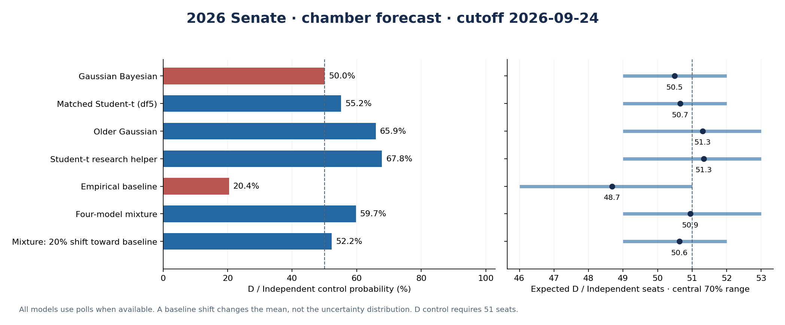
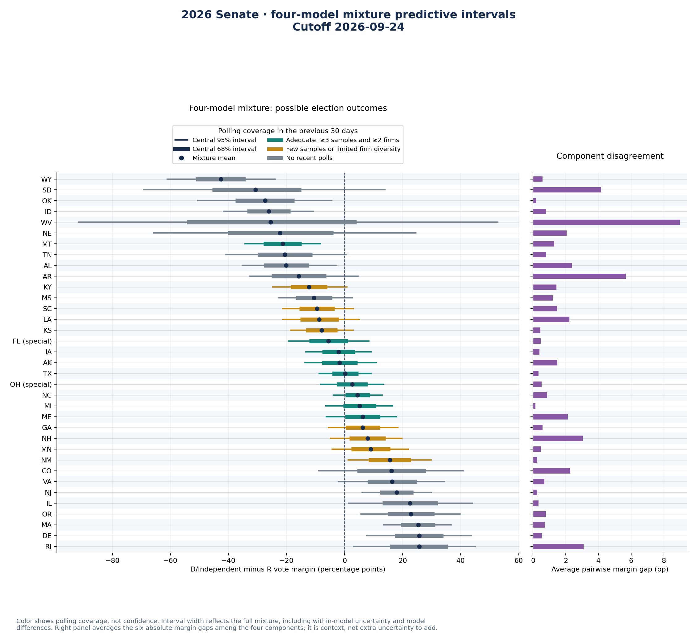
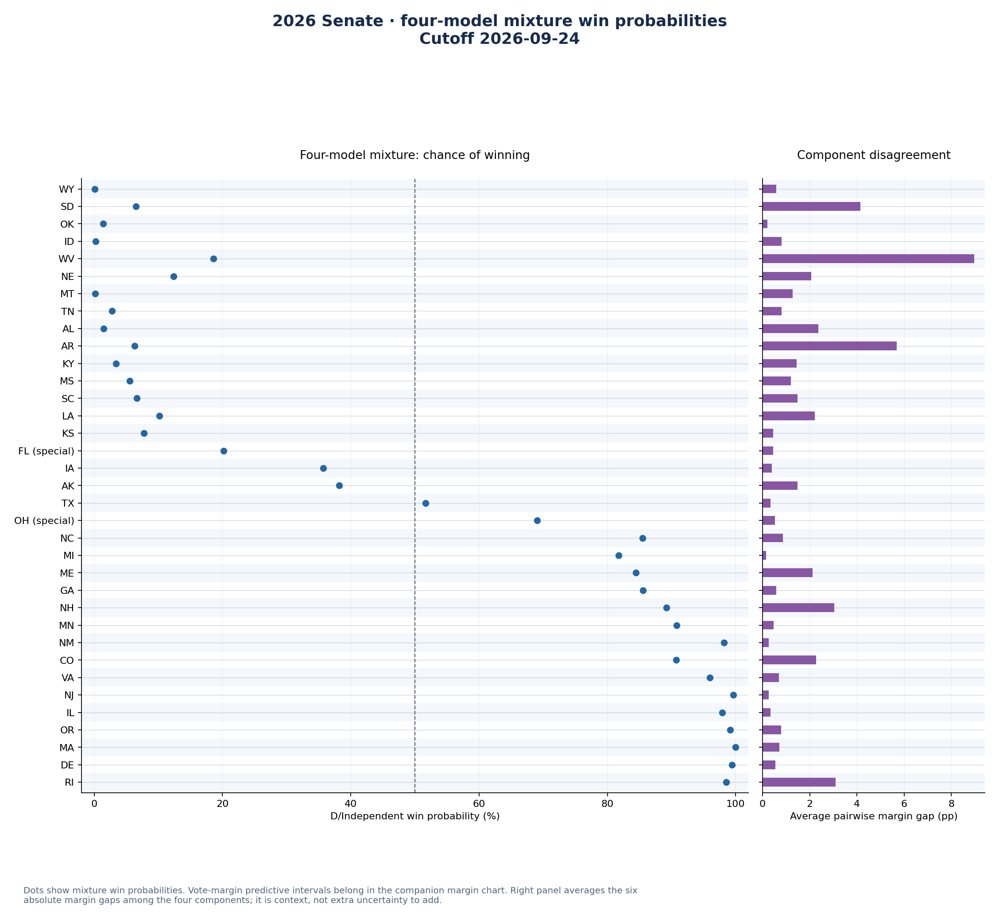
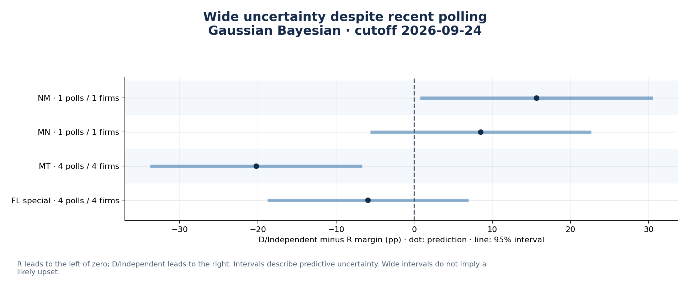
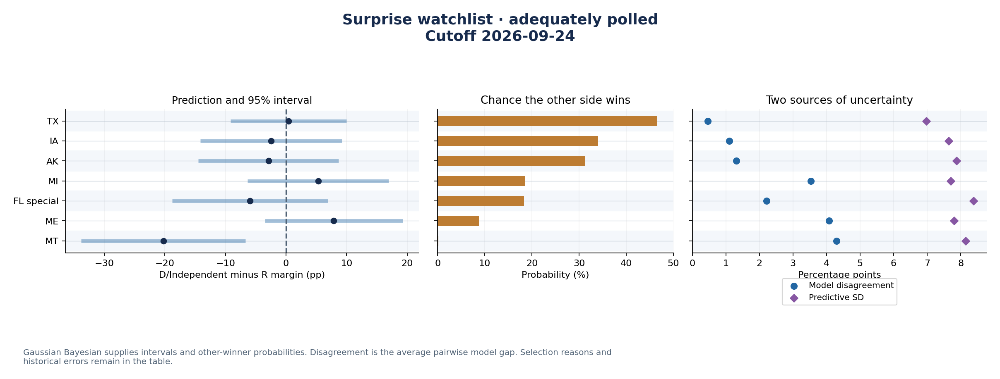
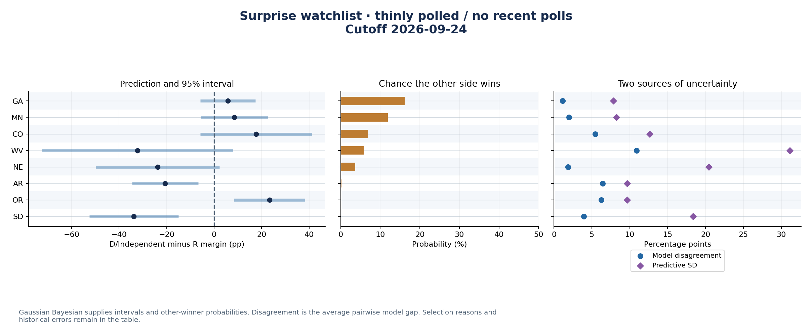
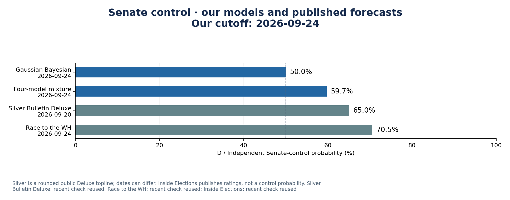
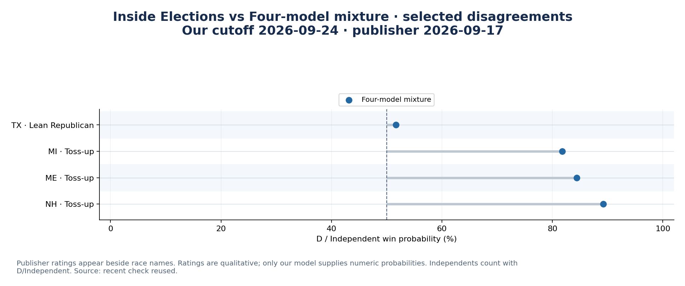
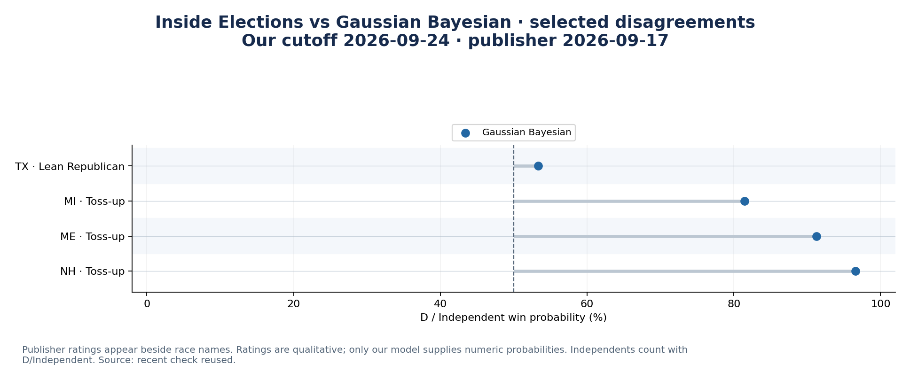
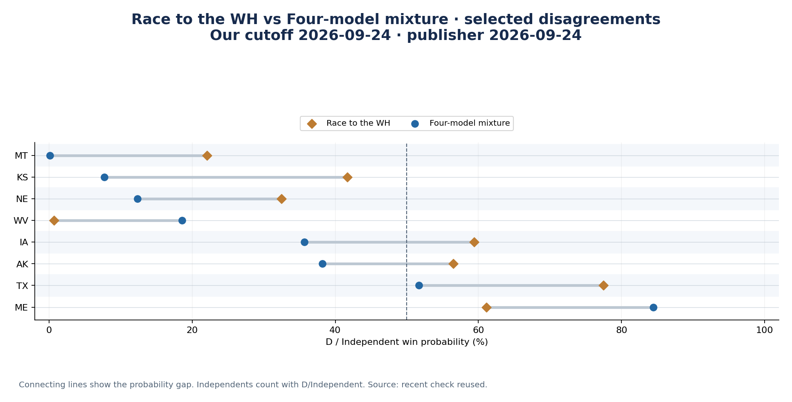
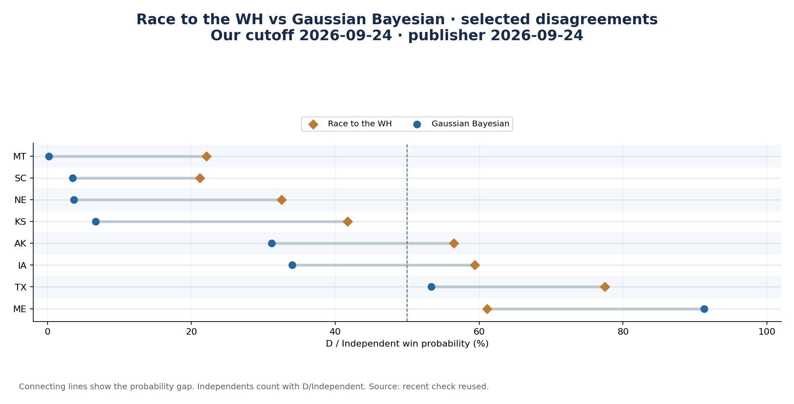
{
"kind": "live",
"as_of": "2026-09-24",
"dataset": "cache/run_inputs/23b2bc970382fdf4ba4c448ba1c121e626ac94edd8ac598d372d867e4caa4b58",
"dataset_manifest_sha256": "23b2bc970382fdf4ba4c448ba1c121e626ac94edd8ac598d372d867e4caa4b58",
"snapshot_as_of": "2026-09-24",
"feature_mode": "dated",
"reconstruction": false,
"availability_policy": "Known poll release cutoff; unknown releases use field end. Features use latest-vintage reference periods, not publication-vintage reconstruction.",
"main": "repaired_both__selected",
"reference_model": "Bayesian",
"ensemble": {
"schema_version": 1,
"reference": "Bayesian",
"component_weights": {
"Bayesian": 0.25,
"Matched Student-t (df5)": 0.25,
"Older Gaussian": 0.25,
"Student-t research helper": 0.25
},
"mixture_label": "Four-model mixture",
"mean_shift_weights": [
0.05,
0.1,
0.2,
0.3,
0.4,
0.5
],
"display_mean_shift_weight": 0.2,
"mean_shift_target": "Non-Bayesian corrected",
"selection": "Fixed sensitivity grid; no learned ensemble weights or outcome-based selection",
"mixture_rule": "Select one component for the entire joint state vector; retain between-model disagreement",
"polling_rule": "Translate each joint draw by alpha*(polling_mean-mixture_mean); covariance unchanged"
},
"validation": "Chronological earlier-cycle validation; architecture selection reused evaluation years",
"trained_through": 2024,
"calibration_horizon": "frozen September17 historical forecasts",
"refreshed_hyperparameters": false,
"weights": [
0.1,
0.2,
0.4,
0.5
],
"freshness": {
"mode": "online_with_cache",
"checked_on": "2026-09-24",
"stale_sources": [],
"sources": [
{
"freshness": {},
"manifest_sha256": "fc33c4887aa6bbd4bc7ad130ebe2561c39037a640251edc35d7f17b03e4d980e",
"poll_latest_dates": {
"generic_latest_poll_end": "2026-09-22",
"latest_poll_end": "2026-09-23"
},
"verified_files": 8,
"source": "polls",
"status": "saved_or_unchanged",
"acquisition_status": "fresh_check_cache",
"checked_at": "2026-09-24T15:42:51.478938+00:00"
},
{
"freshness": {
"A229RX0.csv": {
"first_source_date": "1959-01-01",
"freshness": "has_current_year_rows",
"last_source_date": "2026-07-01",
"selected_rows": 7
},
"CPIAUCSL.csv": {
"first_source_date": "1947-01-01",
"freshness": "has_current_year_rows",
"last_source_date": "2026-08-01",
"selected_rows": 8
},
"CUSR0000SETB01.csv": {
"first_source_date": "1967-01-01",
"freshness": "has_current_year_rows",
"last_source_date": "2026-08-01",
"selected_rows": 8
},
"GDPC1.csv": {
"first_source_date": "1947-01-01",
"freshness": "has_current_year_rows",
"last_source_date": "2026-04-01",
"selected_rows": 2
},
"NASDAQCOM.csv": {
"first_source_date": "1971-02-05",
"freshness": "has_current_year_rows",
"last_source_date": "2026-09-23",
"selected_rows": 189
},
"STLFSI4.csv": {
"first_source_date": "1993-12-31",
"freshness": "has_current_year_rows",
"last_source_date": "2026-09-18",
"selected_rows": 38
},
"UNRATE.csv": {
"first_source_date": "1948-01-01",
"freshness": "has_current_year_rows",
"last_source_date": "2026-08-01",
"selected_rows": 8
}
},
"manifest_sha256": "90dae1adab4d9548209b4623bd37c6a7e75476f1b0e7634bcf2175e6bf79541b",
"poll_latest_dates": {},
"verified_files": 18,
"source": "fred",
"status": "saved_or_unchanged",
"acquisition_status": "fresh_check_cache",
"checked_at": "2026-09-24T15:42:52.749125+00:00"
},
{
"freshness": {
"RB_10.xls": {},
"RB_1a.xls": {},
"RB_1b.xls": {},
"RB_5b.xls": {},
"RB_6.xls": {},
"RB_8.xls": {},
"YB_10.xls": {},
"YB_1a.xls": {},
"YB_1b.xls": {},
"YB_5b.xls": {},
"YB_6.xls": {},
"YB_8.xls": {}
},
"manifest_sha256": "28ee8fa3d3acd575b88b06dc9db2bf16938c3f192a615bd47fa0402c2749d80f",
"poll_latest_dates": {},
"verified_files": 17,
"source": "michigan",
"status": "saved_or_unchanged",
"acquisition_status": "fresh_check_cache",
"checked_at": "2026-09-24T15:42:54.445987+00:00"
},
{
"freshness": {
"donald-j-trump-2nd-term-public-approval.html": {}
},
"manifest_sha256": "66f57231b5e6293f6ca3648dbb5937f528d9b9c3c6dc8a936d6ff5701c0c4bc1",
"poll_latest_dates": {},
"verified_files": 6,
"source": "ucsb",
"status": "saved_or_unchanged",
"acquisition_status": "fresh_check_cache",
"checked_at": "2026-09-24T15:42:50.529189+00:00"
},
{
"freshness": {
"ff_factors.zip": {},
"ff_factors_daily.zip": {}
},
"manifest_sha256": "98b024dab6924462c19631698713bead895759525d9b429c4d828a160a196eb0",
"poll_latest_dates": {},
"verified_files": 6,
"source": "french",
"status": "saved_or_unchanged",
"acquisition_status": "fresh_check_cache",
"checked_at": "2026-09-24T15:42:51.166439+00:00"
},
{
"freshness": {
"vix.csv": {
"first_source_date": "1990-01-02",
"freshness": "has_current_year_rows",
"last_source_date": "2026-09-22",
"selected_rows": 187
}
},
"manifest_sha256": "989679281069deae6d57966e1c24dde804916a7e2a4cb4e8141d293cdcc97906",
"poll_latest_dates": {},
"verified_files": 6,
"source": "cboe",
"status": "saved_or_unchanged",
"acquisition_status": "fresh_check_cache",
"checked_at": "2026-09-24T15:42:51.836477+00:00"
},
{
"freshness": {
"data_gpr_daily_recent.xls": {},
"data_gpr_export.xls": {}
},
"manifest_sha256": "c18cc2687073438a53fdeb2fbc395fe9e8fe6ce78741224261f1468425dfc870",
"poll_latest_dates": {},
"verified_files": 6,
"source": "gpr",
"status": "saved_or_unchanged",
"acquisition_status": "fresh_check_cache",
"checked_at": "2026-09-24T15:42:53.536860+00:00"
},
{
"freshness": {
"Categorical_EPU_Data.xlsx": {},
"US_Policy_Uncertainty_Data.xlsx": {},
"daily_epu.csv": {
"first_source_date": "1985-01-01",
"freshness": "has_current_year_rows",
"last_source_date": "2026-09-23",
"selected_rows": 266
}
},
"manifest_sha256": "9bf55e5e8086dbb1d0b19c533dbcadf1d2c09c21d598a0f4ab7292d2af268b57",
"poll_latest_dates": {},
"verified_files": 8,
"source": "epu",
"status": "saved_or_unchanged",
"acquisition_status": "fresh_check_cache",
"checked_at": "2026-09-24T15:42:53.532802+00:00"
},
{
"freshness": {
"infectious_emv.csv": {
"first_source_date": "1985-01-01",
"freshness": "has_current_year_rows",
"last_source_date": "2026-09-23",
"selected_rows": 266
}
},
"manifest_sha256": "85533351114283d64807c9444e2cc83bdb8ddb2daae5a1dd84be86215ecff61d",
"poll_latest_dates": {},
"verified_files": 6,
"source": "infectious_emv",
"status": "saved_or_unchanged",
"acquisition_status": "fresh_check_cache",
"checked_at": "2026-09-24T15:42:53.533416+00:00"
}
]
},
"missing_current_feature_scores": [],
"political_reference_reviewed_through": "2026-09-17",
"political_context_carried_forward": true
}